生成时间：2026-06-12T11:12:51+08:00
今日保留论文数：2
内容构成：今日新文 2 篇；补充推荐 1 篇；经典旧文精读 0 篇
补充推荐论文数：1
高能天体物理重点
1. Data-driven modeling of Galactic diffuse emission with multi-wavelength observations
- 来源：arXiv / astro-ph.HE
- 链接：https://arxiv.org/abs/2606.12832v1
- 作者：Xi Liu, Xiaodong Li, Sujie Lin, Yihan Liu, Chengyu Shao, Lili Yang, Le Zhang
- 评分：novelty 8/10，importance 8/10，relevance 10/10，final 9.70/10
- 推荐理由：直接使用Fermi-LAT 50 MeV–814 GeV与Planck多波段数据进行银河弥散伽马射线数据驱动建模，涉及宇宙线传播、强子/轻子成分、银河中心和非标准成分分离；伽马射线天文高度相关且方法可复用。
中文题目：用多波段观测数据驱动建模银河系弥散辐射
做了什么：这篇文章把普朗克卫星在 \(30\) 到 \(857\,\mathrm{GHz}\) 的射电/微波全天图与费米 \(\gamma\) 射线望远镜在 \(50\,\mathrm{MeV}\) 到 \(814\,\mathrm{GeV}\) 的弥散辐射数据配对，用监督机器学习建立“射电多频图像 \(\rightarrow\) \(\gamma\) 射线强度”的非线性映射。模型在 \(0.1\) 到 \(10\,\mathrm{GeV}\) 能段达到 \(R^2>0.90\)，在内银盘和银心区域相对传统 \(\mathrm{GALPROP}\) 模型给出更高的 \(R^2=0.95\) 和较低的平均绝对相对误差 \(14.7\%\)。作者进一步用不同射电频段的重要性和残差结构来解释物理来源：高频射电图对 \(0.1\) 到 \(10\,\mathrm{GeV}\) 预测最关键，被解释为强子过程主导的经验证据；低频射电图对 \(>10\,\mathrm{GeV}\) 更重要，指向轻子过程贡献。
为什么重要：银河弥散 \(\gamma\) 射线既是宇宙线传播、星际气体和辐射场的综合探针，也是暗物质湮灭、费米泡、局域环状结构等非标准成分搜索的主要前景噪声。传统模型依赖气体模板、宇宙线源分布和传播参数，系统误差很难完全量化；本文尝试从多波段图像本身学习一个经验基线，可直接暴露传统星际发射模型遗漏或偏置的空间结构。
理论 / 观测 / 仪器方法价值：方法价值在于它不是只做黑箱预测，而是把跨波段预测精度、频段重要性、能段依赖和残差图结合起来，形成一套可检验的多信使诊断。对理论而言，它给宇宙线强子/轻子成分的空间相关性提供经验约束；对观测而言，它可作为 \(\gamma\) 射线前景建模和异常成分分离的替代基线；对方法而言，它展示了如何用监督学习补充 \(\mathrm{GALPROP}\) 一类物理模型。
为什么应该关注：如果你研究银河宇宙线、弥散 \(\gamma\) 射线、暗物质间接探测或大尺度射电结构，这篇文章值得关注，因为它把“前景模型不确定性”转化为一个可用数据交叉验证的预测问题。即使你不接受作者对强子/轻子主导性的全部解释，残差图中 \(\mathrm{Loop\ I}\)、\(\mathrm{Loop\ III}\) 等相干结构也提示：许多所谓异常信号可能首先是标准星际发射模板不完备的表现。
展开详细解读：文章讲解、背景、理论、重点章节、图表与相关工作
文章详细讲解
科学问题：银河弥散 \(\gamma\) 射线来自宇宙线质子、电子和原子核与星际气体、星际辐射场以及磁场环境的相互作用。困难在于这些输入量本身都不直接可观测，传统做法必须假定宇宙线源分布、扩散系数、再加速、对流、气体柱密度和辐射场模型。本文问的是：如果不先写下完整的宇宙线传播模型，而是直接利用多频射电/微波图，能否重建费米 \(\gamma\) 射线弥散辐射的空间形态和能谱变化？这个问题重要，因为射电/微波辐射本身携带同步辐射、自由-自由辐射、尘埃热辐射和异常微波辐射等信息，它们分别追踪电子、气体、电离介质、尘埃和恒星形成环境。
作者怎么做：他们选取普朗克 \(30\) 到 \(857\,\mathrm{GHz}\) 多频全天图作为输入，选取费米 \(50\,\mathrm{MeV}\) 到 \(814\,\mathrm{GeV}\) 的 \(\gamma\) 射线强度图作为监督学习目标。每个天空像素或空间单元在多个射电/微波频率上形成特征向量，模型学习这些特征与不同 \(\gamma\) 射线能段强度之间的非线性关系。评估指标包括决定系数 \(R^2\)、平均绝对相对误差以及残差图。作者还将模型表现按能段、频段和银河区域拆分，和 \(\mathrm{GALPROP}\) 的星际发射模型进行对比。
关键结果：在 \(0.1\) 到 \(10\,\mathrm{GeV}\) 范围内，机器学习模型达到 \(R^2>0.90\)，说明多频射电/微波观测确实包含足够信息来预测大部分银河弥散 \(\gamma\) 射线结构。内银盘和银心区域尤其突出，数据驱动模型给出 \(R^2=0.95\) 和平均绝对相对误差 \(14.7\%\)，优于文中对比的 \(\mathrm{GALPROP}\) 结果。频段重要性分析显示，高频射电/微波波段对 \(0.1\) 到 \(10\,\mathrm{GeV}\) 的预测贡献最大，作者将其解释为气体、尘埃和恒星形成环境与强子 \(\pi^0\) 衰变 \(\gamma\) 射线的相关性；而在 \(>10\,\mathrm{GeV}\) 能段，低频射电对预测更关键，更接近高能电子同步辐射与逆康普顿/轫致辐射的联系。
局限和下一步：这类工作最主要的局限是相关性不等于因果性。高频尘埃辐射与强子 \(\gamma\) 射线都追踪气体和恒星形成区，但这并不自动证明单个像素中的 \(\gamma\) 射线一定由强子过程主导；低频同步辐射与高能 \(\gamma\) 射线的相关性也会受到磁场强度、电子冷却、吸收和点源污染影响。下一步需要把机器学习残差与独立气体模板、脉冲星/超新星遗迹目录、费米泡模板、\(\mathrm{H\ I}\) 与 \(\mathrm{CO}\) 速度分解、以及不确定的暗气体分布联合检验。更进一步，可以把数据驱动模型作为 \(\gamma\) 射线前景的先验或协变量，嵌入传统似然分析，而不是只做事后预测。
关键结果是怎么做出来的
本文证据链从样本构造开始：输入端是普朗克从 \(30\) 到 \(857\,\mathrm{GHz}\) 的多频全天图，输出端是费米 \(50\,\mathrm{MeV}\) 到 \(814\,\mathrm{GeV}\) 的弥散 \(\gamma\) 射线图。关键不是单一频段相关，而是每个天空方向上的多维频谱形状能否预测对应方向和能段的 \(\gamma\) 射线强度。读者应特别注意作者如何处理掩膜、空间分辨率匹配、能段划分、点源或强源区域，以及训练集和测试集是否在空间上独立；这些选择直接决定 \(R^2\) 是否反映真实外推能力，还是只反映邻近像素的空间自相关。
最重要的统计量是 \(R^2\) 和平均绝对相对误差。\(0.1\) 到 \(10\,\mathrm{GeV}\) 的 \(R^2>0.90\) 表明模型解释了测试数据中大部分方差，但高 \(R^2\) 在全天图问题中并不自动等于物理模型正确，因为银盘-高纬亮度梯度本身就很强。因此应看分区表现：内银盘和银心区域达到 \(R^2=0.95\)、平均绝对相对误差 \(14.7\%\)，如果这是在独立测试像素上得到的，就说明模型不只是学到“银纬越低越亮”的一阶趋势，而是捕捉了较细的空间结构。
模型比较方面，文章把机器学习预测与 \(\mathrm{GALPROP}\) 模型作对照。这里需要关注比较是否在同一掩膜、同一能段、同一空间分辨率、同一归一化方式下进行。若 \(\mathrm{GALPROP}\) 被允许整体重标定而机器学习直接拟合数据，那么二者的自由度并不相同；反过来，如果机器学习在测试集上仍显著优于 \(\mathrm{GALPROP}\)，它就可被视为一个有竞争力的经验前景模板。支撑这一结论的图表应包括预测图、观测图、残差图、散点图和区域化误差统计。
频段重要性是本文物理解读的核心证据。作者发现高频射电/微波波段对 \(0.1\) 到 \(10\,\mathrm{GeV}\) 最有预测力，并将其联系到强子 \(\gamma\) 射线，因为高频尘埃/热辐射与气体柱密度、恒星形成和宇宙线质子靶物质密切相关。\(>10\,\mathrm{GeV}\) 时低频射电更重要，被解释为轻子过程增强，因为低频同步辐射更直接追踪相对论电子。这个推断要看特征重要性是否稳定于不同算法、不同天空掩膜、不同频段组合和不同能段划分。
残差图是比整体分数更有物理信息的结果。文章提到残差中出现 \(\mathrm{Loop\ I}\)、\(\mathrm{Loop\ III}\) 等相干大尺度结构，说明模型在这些区域不能完全由普朗克多频图预测费米 \(\gamma\) 射线，或者这些区域的射电-\(\gamma\) 关系不同于训练集中主导关系。稳健性检验应包括改变训练/测试划分、去除特定频段、去除银心或高纬区域、比较正负残差的能谱、以及检查残差是否与费米曝光、点源模板或气体模板误差相关。
背景知识
银河弥散 \(\gamma\) 射线是费米时代高能天体物理中最重要也最麻烦的前景之一。宇宙线质子与星际气体碰撞产生中性 \(\pi^0\)，其衰变产生 \(\gamma\) 射线；宇宙线电子还会通过轫致辐射和逆康普顿散射产生 \(\gamma\) 射线。同一批电子在银河磁场中产生同步辐射，因此射电图和 \(\gamma\) 射线图之间天然存在联系，但这种联系受气体、尘埃、磁场、辐射场和源分布共同调制。
历史上，银河弥散辐射建模主要依赖物理传播代码，例如 \(\mathrm{GALPROP}\)、\(\mathrm{DRAGON}\) 或类似框架。这些模型解宇宙线输运方程，并结合 \(\mathrm{H\ I}\)、\(\mathrm{CO}\)、尘埃、星际辐射场和磁场模型来预测多波段辐射。它们物理可解释性强，但输入假设很多，尤其在银心、内银盘、暗气体、局域泡和大尺度环状结构附近，系统误差常常大于统计误差。
为什么现在值得重新看？一方面，普朗克提供了从低频同步/自由-自由到高频尘埃的均一全天图，费米长期积累让 \(\gamma\) 射线弥散图在多个能段上信噪比很高。另一方面，机器学习方法可以处理非线性、多变量、空间上复杂的相关关系，适合作为传统模板建模的补充。它不必替代物理传播模型，但可以告诉我们：在观测空间中，哪些波段最能预测 \(\gamma\) 射线，哪些区域明显偏离常规相关关系。
该领域常见误区之一是把多波段相关性直接等同于单一辐射机制。尘埃高频辐射与强子 \(\gamma\) 射线可能都追踪气体柱密度，但尘埃温度、金属丰度、辐射场强度都会改变这种关系。低频射电与轻子 \(\gamma\) 射线相关，也不意味着磁场已知，因为同步辐射亮度同时依赖电子谱和磁场。另一个误区是只看全天 \(R^2\)；对弥散发射而言，大尺度梯度能让简单模型看起来很好，真正关键的是残差的空间相干性、能谱形状和独立区域外推能力。
这篇工作的背景还包括暗物质间接探测和费米泡等异常结构研究。任何银心 \(\gamma\) 射线超额、未解析点源群或暗物质信号的显著性，都强烈依赖前景模型。若数据驱动模型能够提供与 \(\mathrm{GALPROP}\) 独立的前景估计，它就能帮助评估所谓异常信号是否只是前景模型选择造成的。
基础理论 / 方法脉络
基本物理图像可以从宇宙线和星际介质相互作用理解。宇宙线质子与气体核碰撞产生 \(\pi^0\)，\(\pi^0\) 很快衰变为两个 \(\gamma\) 光子；宇宙线电子在气体中产生轫致辐射，在星际辐射场中通过逆康普顿散射把低能光子提升到 \(\gamma\) 射线能段，并在磁场中产生同步辐射。因而，\(\gamma\) 射线图像不是单一物质分布图，而是宇宙线谱、气体、辐射场和磁场的卷积结果。
普朗克的多频图并不都是同一种物理成分。低频 \(30\) 到 \(70\,\mathrm{GHz}\) 更容易包含同步辐射、自由-自由辐射和异常微波辐射；中高频到 \(857\,\mathrm{GHz}\) 逐渐由热尘埃占主导。热尘埃常被用作气体和暗气体的替代示踪，因而可能与强子 \(\gamma\) 射线相关；同步辐射更直接追踪宇宙线电子和磁场，因而与轻子 \(\gamma\) 射线过程相关。但这些只是物理倾向，不是严格一一对应。
本文的方法假设是：在足够大的空间尺度和适当平滑后，给定某方向的多频射电/微波强度向量 \(\mathbf{x}\)，存在一个可学习的非线性函数 \(f_E(\mathbf{x})\)，能预测该方向在能段 \(E\) 的 \(\gamma\) 射线强度 \(I_\gamma(E)\)。这里的 \(f_E\) 不是直接的输运方程解，而是经验映射。它可吸收尘埃-气体关系、电子同步辐射、恒星形成环境和大尺度空间梯度等多种信息，因此高预测精度本身说明多波段观测编码了丰富的星际介质与宇宙线信息。
需要警惕的退化关系包括：气体柱密度和尘埃辐射之间的温度/成分退化，宇宙线电子归一化和磁场强度之间的同步辐射退化，逆康普顿辐射场强度和电子谱之间的退化，以及空间训练/测试划分导致的自相关偏差。若相邻像素同时出现在训练集和测试集，模型可能利用空间平滑性而非物理关系取得高分。因此，专业读者应重点检查作者是否做了空间块交叉验证、频段消融和区域外推检验。
观测数据分析逻辑上，费米 \(\gamma\) 射线图受曝光、点扩散函数、能量色散、前景点源和泊松计数噪声影响；普朗克图受零点、单位转换、前景成分混合、角分辨率差异和带通修正影响。把二者配对前必须统一分辨率、像素化、掩膜和单位。残差图不应只被看作机器学习误差，它实际上是寻找模型遗漏物理成分、局域结构或仪器系统误差的主要诊断量。
公式与推导
第一步从弥散 \(\gamma\) 射线强度的视线积分出发。若方向为 \(\hat{\mathbf{n}}\)，能量为 \(E_\gamma\)，则观测强度可写成
其中 \(q_\gamma\) 是单位体积、单位能量、单位时间的 \(\gamma\) 射线发射率，\(s\) 是视线距离。这个式子说明任何全天图比较本质上是在比较沿视线积分后的发射率，而不是三维局域物理量。
强子过程的近似发射率可写为
其中 \(n_{\rm H}\) 是气体数密度，\(J_p\) 是宇宙线质子通量，\(d\sigma_{pp\rightarrow \pi^0\rightarrow \gamma}/dE_\gamma\) 是微分截面。若高频尘埃辐射较好追踪气体柱密度 \(N_{\rm H}\)，它自然可能成为 \(0.1\) 到 \(10\,\mathrm{GeV}\) 强子 \(\gamma\) 射线的好预测因子。
轻子同步辐射的特征频率满足近似关系
其中 \(B_\perp\) 是垂直于电子速度的磁场分量，\(\gamma_e\) 是电子洛伦兹因子。这个式子把低频射电图与相对论电子谱联系起来，但也显示同步辐射亮度同时依赖电子能谱和磁场，二者存在退化。
逆康普顿散射在汤姆孙近似下给出典型 \(\gamma\) 射线能量
其中 \(\epsilon_{\rm ph}\) 是被散射的星际辐射场光子能量。若同一批电子既产生低频同步辐射又产生高能逆康普顿 \(\gamma\) 射线，则低频射电对 \(>10\,\mathrm{GeV}\) \(\gamma\) 射线有预测力是可以物理理解的。
本文的数据驱动模型可抽象为
其中 \(k\) 标记 \(\gamma\) 射线能段，\(I_{\nu_i}\) 是第 \(i\) 个普朗克频段强度，\(\boldsymbol{\theta}_k\) 是机器学习模型参数。这个方程不声明具体物理机制，而是把多频观测压缩为预测函数。
若训练目标采用平方误差，经验风险可写为
其中 \(p\) 是像素，\(\mathcal{T}\) 是训练集，\(w_{p,k}\) 可表示噪声或掩膜权重。这个损失函数强调高亮区域，若不适当加权，银盘会主导训练结果。
预测性能常用决定系数衡量：
其中 \(\mathcal{V}\) 是验证或测试集，\(\bar{I}_{\gamma,k}\) 是测试集平均强度。\(R_k^2>0.90\) 表示模型解释了测试集中超过九成的方差，但它对空间梯度敏感，必须结合残差图解释。
平均绝对相对误差可写为
其中 \(N_{\mathcal{V}}\) 是测试像素数。文中内银盘和银心区域的 \(14.7\%\) 可理解为典型相对预测误差，但在低亮度区域该指标可能被小分母放大。
残差场定义为
或归一化为 \(\Delta_k(p)/\sigma_k(p)\)。如果 \(\Delta_k\) 呈现 \(\mathrm{Loop\ I}\) 或 \(\mathrm{Loop\ III}\) 这样的相干结构，它更可能指向遗漏天体物理成分或模板偏差，而不是独立像素噪声。
模型拟合 / 应用方法
这篇文章的拟合对象不是传统意义上的少数物理参数，而是多频射电/微波强度到 \(\gamma\) 射线强度的函数映射。每个 \(\gamma\) 射线能段可以有一个独立预测器，输入特征是普朗克各频率强度，输出是费米对应能段的弥散强度。拟合质量用 \(R^2\)、平均绝对相对误差、散点关系和残差图诊断。专业读者应把这些指标与空间掩膜和训练/测试划分一起看，而不是孤立比较数字。
如果模型是树模型、集成学习或神经网络，参数本身未必有直接物理意义，但特征重要性、消融实验和能段依赖可以提供可解释性。比如去掉高频尘埃相关频段后，\(0.1\) 到 \(10\,\mathrm{GeV}\) 的预测若明显变差，就支持高频波段确实携带关键气体/强子信息；去掉低频同步相关频段后，\(>10\,\mathrm{GeV}\) 的预测若下降，则支持轻子关联。但这种解释需要在不同算法和不同区域上稳定。
似然层面，费米计数本质上服从泊松统计，而机器学习通常拟合曝光校正后的强度图。若直接对强度做平方误差拟合，就隐含近似高计数高斯噪声，且可能忽略能量相关点扩散函数和曝光非均匀性。更严格的后续工作可以把模型输出作为强度模板，重新放入费米事件级或像素级泊松似然中，检验其对暗物质模板、费米泡模板或点源模板显著性的影响。
主要退化关系包括频段之间的共线性、空间结构之间的共线性和物理机制之间的共线性。普朗克高频图彼此高度相关，低频图也混合了同步、自由-自由和异常微波辐射；机器学习模型可能依赖其中任一代理变量而非真正机制。内银盘中气体、尘埃、恒星形成、超新星遗迹和宇宙线源都空间重合，因此“高频重要”并不唯一指向 \(\pi^0\) 衰变，需要结合能谱和独立气体分解。
模型可能失败的场景包括：局域结构如 \(\mathrm{Loop\ I}\) 的射电-\(\gamma\) 关系不同于全银河平均关系；银心附近存在未解析点源群或非标准成分；高纬低亮度区域受统计噪声、点源残留或太阳/月球 \(\gamma\) 射线污染影响；普朗克图中的尘埃温度变化导致气体示踪偏差。实际应用时，应把该模型视为前景基线和异常探测器，而不是无需物理验证的最终星际发射模型。
重点章节 / 结果段落怎么读
数据/样本部分应首先看作者如何把普朗克和费米数据放到同一像素化、角分辨率和掩膜下。重点是频段范围 \(30\) 到 \(857\,\mathrm{GHz}\)、能量范围 \(50\,\mathrm{MeV}\) 到 \(814\,\mathrm{GeV}\)、点源处理、银道面/高纬区域划分，以及训练集和测试集是否有空间独立性。
方法部分要看监督学习模型的输入输出定义、目标函数、验证方式和特征重要性计算。读者应特别区分模型是在每个能段独立训练，还是联合预测整个能谱；也要看是否做了频段消融，因为这是把预测模型转化为物理解释的关键步骤。
主结果部分应集中阅读预测性能随能量变化的图表。\(0.1\) 到 \(10\,\mathrm{GeV}\) 的 \(R^2>0.90\) 是全文核心数字；内银盘和银心区域的 \(R^2=0.95\) 与 \(14.7\%\) 平均绝对相对误差是与 \(\mathrm{GALPROP}\) 对比的主要结果。需要确认这些数字对应测试集还是训练集，以及误差条或区域散布有多大。
讨论部分要重点看作者如何解释高频和低频射电波段的重要性。高频主导 \(0.1\) 到 \(10\,\mathrm{GeV}\) 被解读为强子起源支持，低频主导 \(>10\,\mathrm{GeV}\) 被解读为轻子起源支持。专业读者应寻找作者是否承认尘埃-气体、同步-磁场、空间共线性等退化。
残差和稳健性部分是判断论文价值的关键。残差中 \(\mathrm{Loop\ I}\)、\(\mathrm{Loop\ III}\) 等相干结构说明模型没有完全吸收所有标准成分，这些区域可能是传统星际模型偏差、局域结构或额外发射机制的线索。若附录中有不同掩膜、不同算法、不同能段划分或与 \(\mathrm{GALPROP}\) 的统一条件比较，应优先阅读。
建议重点查看的图表
-
多频输入图与费米目标图：检查普朗克各频段与费米各能段是否统一平滑，银盘、银心和高纬结构是否在视觉上有强共线性。
-
预测值对观测值散点图：看横轴观测 \(I_\gamma\)、纵轴预测 \(\hat{I}_\gamma\) 是否沿一比一直线分布；注意高亮银盘点是否主导 \(R^2\)，低亮度高纬点是否系统偏离。
-
\(R^2\) 和误差随能量变化图：重点看 \(0.1\) 到 \(10\,\mathrm{GeV}\) 的平台，以及 \(>10\,\mathrm{GeV}\) 后性能是否下降或特征重要性转换。
-
频段重要性或消融实验图：检查高频波段在中低能 \(\gamma\) 射线、低频波段在高能 \(\gamma\) 射线中的相对贡献是否显著且稳定。
-
残差全天图：看残差是否随机，还是出现 \(\mathrm{Loop\ I}\)、\(\mathrm{Loop\ III}\)、费米泡、银心或局域气体云等相干结构。
-
与 \(\mathrm{GALPROP}\) 的区域化比较表或图：检查比较是否同区域、同能段、同掩膜；重点看内银盘和银心的 \(R^2=0.95\) 与 \(14.7\%\) 误差是否具有稳健优势。
-
稳健性诊断：若有不同训练/测试划分、不同掩膜或不同算法的结果，要看物理解读是否随这些选择改变。
关键图表逐图导读
图 1：通常应是数据概览或流程图。读者应看横向是否展示普朗克 \(30\) 到 \(857\,\mathrm{GHz}\) 输入图，纵向或旁边是否展示费米不同能段目标图。坐标多半是银河经纬度，颜色是强度或对数强度。读图陷阱是银盘亮度梯度很强，视觉相似不等于模型真的学到细结构。
图 2：预测图、观测图和残差图最关键。观测图给出 \(I_\gamma\)，预测图给出 \(\hat{I}_\gamma\)，残差图给出 \(I_\gamma-\hat{I}_\gamma\)。应看银心、内银盘、高纬结构是否被重建，以及残差是否沿大尺度环、泡状结构或气体云成片分布。若残差有清晰空间相干性，说明误差不是简单统计噪声。
图 3：观测-预测散点图应以观测强度为横轴、预测强度为纵轴，并有一比一直线。好的模型会在中高亮度范围紧贴一比一直线；如果低亮度端弯曲，说明高纬或弱源区域存在偏差。应注意是否用对数坐标，因为对数坐标会弱化高亮银盘偏差的视觉影响。
图 4：性能随能量变化图应显示各能段的 \(R^2\)、平均绝对相对误差或类似指标。核心读法是找出 \(0.1\) 到 \(10\,\mathrm{GeV}\) 的高性能区间，以及 \(>10\,\mathrm{GeV}\) 是否出现性能变化。若误差条或区域散布较大，说明单一总指标不足以概括模型表现。
图 5：频段重要性图或消融图应以普朗克频率为横轴、重要性分数或去除该频段后的性能下降为纵轴。高频波段若在 \(0.1\) 到 \(10\,\mathrm{GeV}\) 明显占优，支持作者关于强子相关性的解释；低频波段若在 \(>10\,\mathrm{GeV}\) 占优，支持轻子相关性解释。陷阱是相邻频段高度相关，单个频段重要性可能不稳定。
图 6：与 \(\mathrm{GALPROP}\) 的比较图或表应按区域列出 \(R^2\)、相对误差和可能的残差。读者应看机器学习在内银盘和银心的优势是否来自整体归一化更灵活，还是来自空间形态确实更好。若表中有不同区域，需比较高纬、外银盘和银心是否一致改进。
图 7：稳健性或附录诊断图若存在，往往比主图更能判断可靠性。应检查换算法、换掩膜、换训练划分后，频段重要性和残差结构是否仍然存在；若只有整体 \(R^2\) 稳定而残差结构变化很大，物理解读需要保守。
论文原图 / 可嵌入图片
Fig09
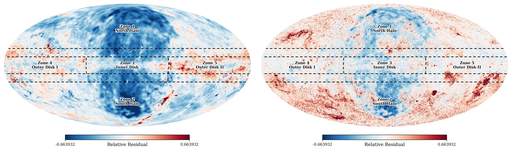
图注：Relative residual maps of Galactic gamma-ray emission at $\sim$4.3 GeV. The left panel shows deviations between the GALPROP physical model and \(\textit{Fermi}\) observations. Right panel shows deviations between the KNN ML predictions and \(\textit{Fermi}\) observations.
对应解读：对应“残差全天图”和“与 GALPROP 的区域化比较表或图”，也支撑图 2/图 6 式的残差与模型对比解读。
入选理由：该图直接并列展示 GALPROP 与 KNN 机器学习预测相对于 Fermi 观测的相对残差图，是判断机器学习是否真正改善空间形态、以及残差是否存在相干大尺度结构的最核心证据；比单纯性能曲线更能支撑日报中关于 Loop、银心、内银盘和传统星际发射模型偏差的讨论。
来源与置信度：\(arxiv_source\)；high；\(arxiv_source\) / template-epjc.tex:figure[9]
Fig05
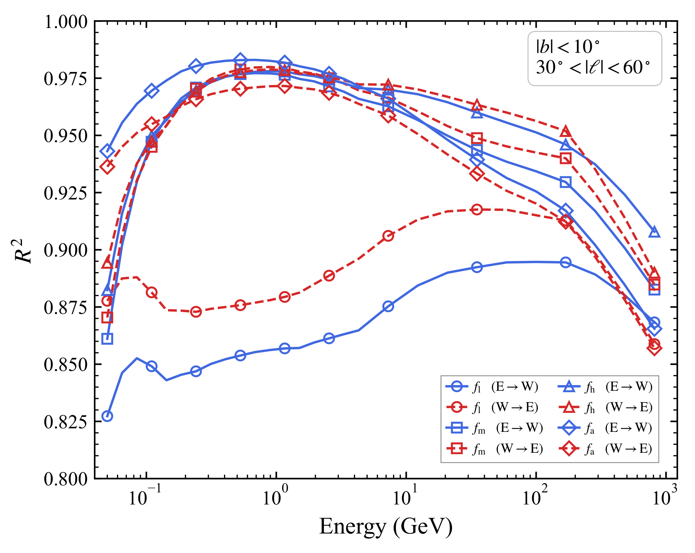
图注：Performance comparison of models using different frequency band groups as features. The analysis works on Inner Disk region: East ($l \in [30^\circ, 60^\circ]$) and West ($l \in [-60^\circ, -30^\circ]$). Solid blue lines ($E \to W$) represent training on the EH and testing on the WH. Dashed red lines ($W \to E$) represent training on the WH and testing on the EH. Input features are grouped into, low-frequency (30--70 GHz), intermediate (100--217 GHz), high-frequency (353--857 GHz), and all bands combined.
对应解读：对应“频段重要性或消融实验图”和模型拟合段落中关于高频/低频波段物理解释的讨论。
入选理由：该图比较低频、中频、高频和全频段输入在内银盘东西半区交叉预测中的表现，最直接检验不同普朗克频段对伽马射线预测的贡献，是支撑强子相关高频波段与轻子相关低频波段解释的关键诊断图。
来源与置信度：\(arxiv_source\)；high；\(arxiv_source\) / template-epjc.tex:figure[5]
Fig03
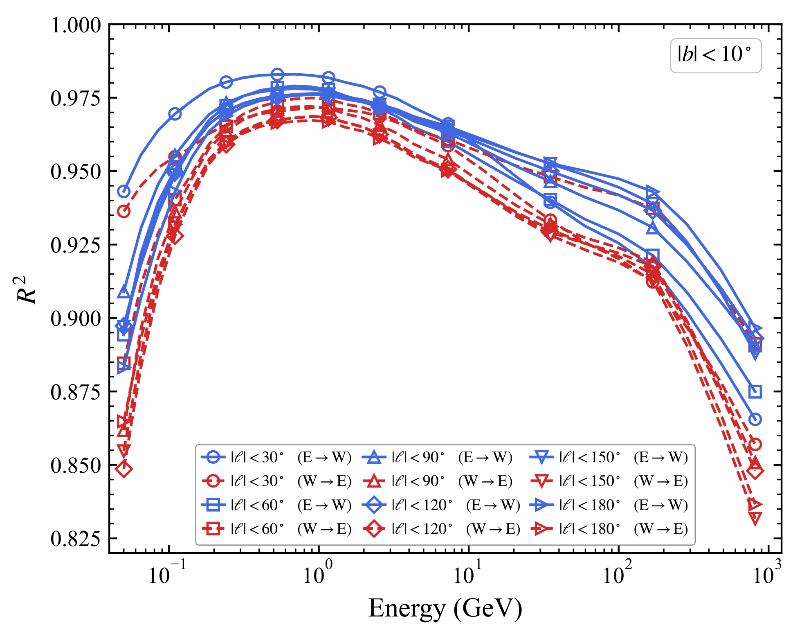
图注：The $R^2$ for symmetric cross-hemisphere validation. Models trained on EH and tested on WH are represented in blue solid lines ($E \to W$). Here, the parameter $\theta$ is set as 30, 60, 90, 120, 150 and 180. The inverse configuration is represented by red dashed lines ($W \to E$).
对应解读：对应“\(R^2\) 和误差随能量变化图”及“稳健性诊断”，尤其是东西半球对称训练/测试的泛化检验。
入选理由：该图给出对称跨半球验证的 \(R^2\)，并比较 E→W 与 W→E 以及不同角尺度参数，能判断高 \(R^2\) 是否只来自局部训练集记忆，还是在银河对称区域间具有可迁移性；这是日报强调训练/测试划分和稳健性的重点。
来源与置信度：\(arxiv_source\)；high；\(arxiv_source\) / template-epjc.tex:figure[3]
Fig04
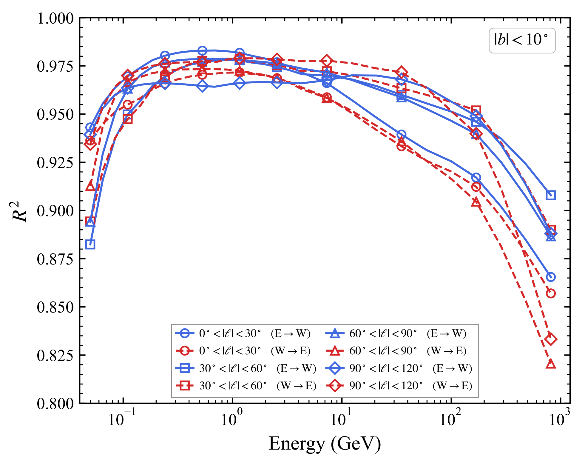
图注：The $R^2$ for models trained on discrete spatial windows of $30^\circ$ width, excluding the GC. Training on the EH and testing on the symmetric WH is represented by blue solid lines ($E \to W$). The inverse configuration is represented by red dashed lines ($W \to E$). The parameter $\theta$ denotes the angular offset from the GC.
对应解读：对应“稳健性诊断”和区域化模型拟合表现，补充图 3 的空间窗口交叉验证。
入选理由：该图展示排除银心后、不同 30 度空间窗口训练的跨半球 \(R^2\)，可检验模型性能对银心强亮度结构和空间窗口选择的依赖；对于判断物理解读是否被内银盘或银心主导很有价值。
来源与置信度：\(arxiv_source\)；high；\(arxiv_source\) / template-epjc.tex:figure[4]
Fig08
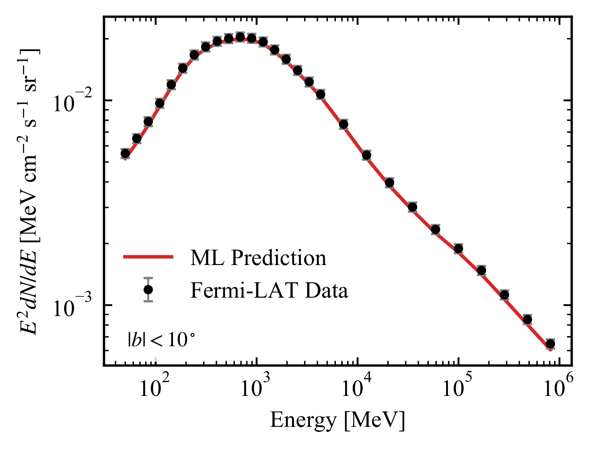
图注：ML predicted (red solid line) and observed (black dots) SED of gamma-ray GDE within the inner Galactic plane ($|b| < 10^\circ$) are shown.
对应解读：对应模型拟合段落中“重建光谱性质”和内银盘观测与预测比较。
入选理由：该图直接比较内银河平面中机器学习预测与观测到的伽马射线 SED，支撑摘要中不仅重建空间形态、也能重建谱性质的结论；它比单能段残差图更能展示模型在能量维度上的整体表现。
来源与置信度：\(arxiv_source\)；high；\(arxiv_source\) / template-epjc.tex:figure[8]
Fig02
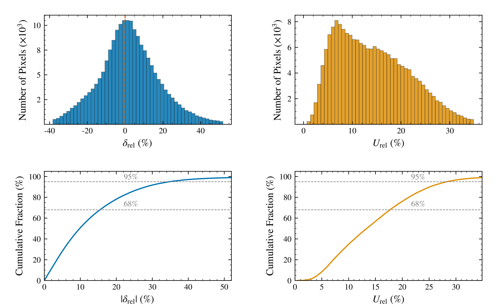
图注：Distribution of relative residuals $\delta_{\mathrm{rel}}$ at 687~MeV.
对应解读：对应“残差全天图/残差诊断”和图 2 式的观测—预测偏差分析。
入选理由：该图给出 687 MeV 相对残差分布，可用于判断误差是否集中、是否存在系统偏差；虽然不如 Fig09 的模型对比信息量大，但它是单能段残差统计的直接证据，有助于补充空间残差图的定量解读。
来源与置信度：\(arxiv_source\)；high；\(arxiv_source\) / template-epjc.tex:figure[2]
强相关工作
这篇文章与传统银河弥散发射建模工作直接相关，尤其是 \(\mathrm{GALPROP}\) 系列模型和费米 \(\mathrm{LAT}\) 对银河弥散 \(\gamma\) 射线的测量。传统工作从宇宙线源、扩散、能量损失、气体和辐射场出发，优点是物理链条清楚；本文则反过来从多波段观测图像学习经验映射，优点是能直接暴露传统模型未捕捉到的数据相关性。建议检索关键词：\(\mathrm{GALPROP}\)、\(\mathrm{Fermi\ LAT\ Galactic\ diffuse\ emission}\)、\(\mathrm{cosmic\ ray\ propagation}\)、\(\mathrm{interstellar\ emission\ model}\)。
它也与暗物质间接探测和银心 \(\gamma\) 射线超额研究有关。银心超额的存在性和形态很依赖前景模型选择；如果数据驱动前景在银心区域明显不同于 \(\mathrm{GALPROP}\)，那么暗物质或未解析毫秒脉冲星解释的显著性都可能改变。相反观点会质疑机器学习模型的物理因果解释，认为特征重要性更多反映空间共线性而非辐射机制。建议检索关键词：\(\mathrm{Galactic\ center\ excess}\)、\(\mathrm{Fermi\ bubbles}\)、\(\mathrm{Loop\ I}\)、\(\mathrm{template\ fitting}\)、\(\mathrm{machine\ learning\ foregrounds}\)。
相似工作：
- https://arxiv.org/abs/2606.12832
- https://arxiv.org/abs/1002.2280
基础理论 / 方法工作：
- https://galprop.stanford.edu/
- https://arxiv.org/abs/astro-ph/9807150
相反观点 / 张力线索：
- https://arxiv.org/abs/1512.08206
- https://arxiv.org/abs/1704.03910
2. Black Hole Polarimetry III: Universal Polarization of Synchrotron Radiation at the Horizon
- 来源：arXiv / astro-ph.HE
- 链接：https://arxiv.org/abs/2606.12518v1
- 作者：Andrew Chael, Alexandru Lupsasca, George N. Wong, Zachary Gelles, Eliot Quataert
- 评分：novelty 8/10，importance 8/10，relevance 8/10，final 9.00/10
- 推荐理由：给出黑洞近视界同步辐射线偏振的普适解析模式，并与GRMHD时间平均图像联系，可用于EHT/VLBI测量黑洞自旋和Blandford-Znajek能量抽取；高能黑洞与辐射诊断相关且重要。
中文题目：黑洞偏振测量 III：视界处同步辐射的普适偏振图样
做了什么：这篇文章研究一个非常具体但很有诊断力的问题：如果毫米波甚长基线干涉测量真的看到了黑洞视界附近、由穿过视界的磁力线底部发出的同步辐射，那么线偏振方向应当长什么样？作者在定常、轴对称、退化的 Kerr 磁层中解析计算了近视界发射的偏振输运，发现观测到的偏振图样具有“普适性”：它只由黑洞自旋 \(a\) 和观测倾角 \(i\) 决定，而不依赖磁场几何的细节。文章还指出，时间平均的广义相对论磁流体模拟图像会趋近这一解析预言。它的重要性在于，近视界偏振可能直接告诉我们电磁能流究竟是由吸积等离子体提供，还是由 Blandford--Znajek 机制抽取黑洞自旋能提供。
为什么重要：EHT 及下一代毫米波 VLBI 已经能测量 M87 和 Sgr A 的环状结构与偏振，但从偏振图像反推出黑洞自旋、磁场拓扑和能量流方向仍高度退化。本文给出一个罕见的解析结果：在视界极限，偏振方向不再记得磁场几何，只保留 \(a\) 与 \(i\) 的信息。这使得视界附近偏振从“复杂模拟图像的特征”变成一个可检验的相对论磁层诊断量。
理论 / 观测 / 仪器方法价值：理论价值在于把 Kerr 磁层、同步辐射偏振和沿零测地线的偏振平行移动联系成一个简洁的近视界极限公式；观测价值在于为未来高动态范围、高角分辨率 VLBI 偏振图像提供了一个可直接寻找的趋势：越靠近由视界穿过磁力线底部主导的发射区，线偏振角越应趋向一个由 \(a\) 和 \(i\) 给定的唯一模式；方法价值在于为 GRMHD 图像中的复杂偏振结构提供了一个解析基准。
为什么应该关注：如果你关心黑洞喷流是如何被发动的，这篇文章值得看，因为它把“磁力线是否穿过视界并抽取自旋能”转换为一个可观测的偏振几何问题。如果你做 EHT、ngEHT、GRMHD 后处理或黑洞参数推断，它提供了一个比总强度环直径更接近能量流物理的诊断量：近视界偏振是否趋向普适模式。
展开详细解读：文章讲解、背景、理论、重点章节、图表与相关工作
文章详细讲解
科学问题：黑洞附近的线偏振不只是辐射转移的附属量，它编码了电磁场方向、等离子体运动、引力透镜和平行移动的综合结果。本文聚焦在更狭窄也更干净的问题：如果同步辐射来自穿过事件视界的磁力线底部，在一个定常、轴对称、满足理想退化条件的 Kerr 磁层中，远处观测者看到的线偏振方向是否依赖磁场具体形状？这个问题直接关系到能量流方向的判别：近视界电磁能流若来自黑洞自旋抽取，其偏振图样可能与普通吸积盘湍流产生的图样不同。
作者怎么做：文章在解析层面处理 Kerr 时空中的近视界发射。假设磁层定常、轴对称并且退化，即电场与磁场满足理想磁流体式的冻结条件，场线可用角速度 \(\Omega_F\) 描述。作者考察视界穿越磁力线底部的同步辐射线偏振，并把局域发射偏振矢量沿光子零测地线平行移动到无穷远。关键是利用近视界极限和 Kerr 几何的特殊结构，证明许多看似依赖磁场构型的项会消去，剩下的观测偏振只由黑洞自旋 \(a\) 与观测倾角 \(i\) 控制。
关键结果：核心结论是一个“普适视界偏振图样”。在该极限下，不论磁力线在远离视界处如何弯曲、不论磁场强度空间分布如何，远处图像平面上的线偏振方向趋向同一个自旋相关模式。作者还将解析公式与时间平均 GRMHD 模拟图像比较，发现模拟中靠近视界主导的发射区域会向这个解析极限靠近。这意味着解析模型不是孤立的数学玩具，而是复杂湍流模拟在合适平均和近视界条件下的吸引子。
局限和下一步：普适性依赖几个强假设：定常、轴对称、退化磁层、发射来自视界穿越磁力线底部，以及线偏振没有被强 Faraday 旋转、束内平均或前景传播效应完全洗掉。真实 M87* 图像中，有限分辨率、非视界发射、湍流时间变、电子温度模型和吸积盘遮挡都会影响偏振角。下一步自然是把这个解析图样嵌入合成观测管线，用 ngEHT 阵列采样、热噪声、偏振泄漏和时间平均窗口检验：在实际数据中能否区分不同 \(a\) 和 \(i\)，以及能否把 Blandford--Znajek 型视界穿越磁通与非视界发射区分开。
关键结果是怎么做出来的
这篇文章的证据链首先不是从大型样本统计开始，而是从一个受控物理样本开始：定常、轴对称、退化 Kerr 磁层中，位于视界穿越磁力线底部的同步辐射。样本选择的关键在于“近视界”和“磁力线穿过视界”两个条件，因为只有在这个极限中，场线几何细节才可能被 Kerr 视界边界条件和零测地线输运压缩掉。读者应把它理解为一个解析极限定理，而不是对所有黑洞偏振图像的经验拟合。
最重要的推导结果是，远处图像平面偏振角的表达式可以写成只依赖 \(a\) 与 \(i\) 的函数。这里没有传统观测论文中的事件数或 \(p\)-value)，但有等价的理论稳健性检验：改变磁场几何时，近视界偏振图样不变；改变黑洞自旋或观测倾角时，图样系统性改变。因此模型比较的核心不是统计显著性，而是解析表达式的参数依赖结构与 GRMHD 合成图像的趋近行为。
文章随后用时间平均 GRMHD 图像作为数值检验。GRMHD 模拟包含湍流、非轴对称结构和有限发射体积，原则上会破坏解析模型的理想条件。作者报告的关键现象是，时间平均后靠近视界的偏振结构会接近解析的普适图样。这一比较是本文从“漂亮解析式”走向“可观测诊断”的关键，因为真实 EHT 图像更接近时间平均、有限分辨率的辐射转移结果，而不是瞬时的理想磁层。
支撑结论的图表应包括三类：解析偏振图样随 \(a\) 与 \(i\) 改变的可视化、不同磁场几何下近视界图样重合的对比、以及 GRMHD 时间平均图像中偏振角向解析极限收敛的残差图。系统误差主要来自非视界发射污染、Faraday 旋转和转换、有限光束卷积、电子热力学处方、磁化区辐射截断以及相机平面中偏振角定义的规范选择。稳健性检验应看作者是否改变磁场构型、发射半径、模拟时间平均长度和观察倾角后仍保持同一趋势。
因此，本文最强的结果不是“已经测到了 M87* 的自旋”，而是提出了一个可证伪的诊断：若未来微角秒偏振 VLBI 能分离近视界发射，并且偏振角在靠近视界时趋向该唯一图样，就支持视界穿越磁通和 Blandford--Znajek 型能量抽取；若数据系统性偏离，则可能说明发射并非来自磁力线底部、磁层非定常非退化、传播效应强，或现有电子加热和辐射模型有缺陷。
背景知识
研究对象是 Kerr 黑洞附近的同步辐射偏振。对于 M87* 这样的低光度活动星系核，毫米波辐射通常被认为来自事件视界尺度的热或非热电子，它们在强磁场中回旋并产生同步辐射。线偏振方向在局域上与投影磁场方向相关，但从黑洞附近传播到远处时会经历强引力透镜、相对论像差、多普勒增强和偏振矢量的平行移动，因此图像平面上的偏振并不是磁场形状的简单投影。
历史问题是喷流能量来源。Blandford--Znajek 机制提出，穿过旋转黑洞视界的磁通可以通过电磁过程抽取黑洞自旋能，为相对论喷流供能。GRMHD 模拟普遍显示，当黑洞周围积累足够磁通，尤其在磁阻塞盘状态下，喷流功率可与吸积功率相比甚至超过它。但观测上要证明能量真的来自黑洞自旋，而不是盘风或内盘磁活动，并不容易。偏振提供了一个可能的窗口，因为它对电磁能流方向和磁场拓扑敏感。
观测背景来自 EHT 对 M87* 的总强度和偏振成像。EHT 已解析出环状结构，并给出环上有序的线偏振分布，提示视界尺度存在有组织磁场。但当前图像分辨率和动态范围仍有限，且偏振反演受稀疏基线覆盖、仪器偏振泄漏、源时变和成像先验影响。未来 ngEHT 或空间 VLBI 若能提高角分辨率和时间采样，才更有机会检查“越靠近视界，偏振是否趋向某个解析极限”。
为什么现在值得重看？因为偏振建模正在从“能不能解释一张图”转向“能不能用特定图样测量物理参数”。总强度环直径主要约束质量距离比和阴影尺度；偏振角分布则可能约束自旋方向、磁场极性、Faraday 深度和能量流。本文的价值在于给出一个低维、解析、可检验的目标，避免完全依赖高维 GRMHD 库。
该领域常见误区包括：第一，把观测偏振棒直接当成局域磁场方向，这在强引力区通常不成立；第二，把任何环状偏振有序性都视为 Blandford--Znajek 证据，而没有排除盘内有序场或传播效应；第三，以为自旋只能从阴影形状测量，事实上偏振和亮度非对称可能更敏感，但也更依赖模型；第四，忽视 Faraday 旋转在毫米波仍可能重要，特别是在低频或高密度吸积流模型中。
基础理论 / 方法脉络
基本物理图像从同步辐射开始。相对论电子在磁场中螺旋运动，辐射电场在局域正交标架中具有偏振方向；对光学薄、幂律电子分布，同步辐射可有较高线偏振度。若发射区在黑洞附近，局域偏振矢量必须沿光子的零测地线平行移动到远处观测者，相机平面上测得的是 Stokes 参数 \(Q\) 与 \(U\)，而不是局域磁场的直接投影。
Kerr 黑洞的旋转引入两个关键效应：框架拖曳和视界角速度。穿过视界的磁力线在理想或退化磁层中以场线角速度 \(\Omega_F\) 旋转，电磁场满足 \(\mathbf{E}\cdot\mathbf{B}=0\) 且存在磁主导条件。能量流方向由 Poynting 通量决定；若场线连接到旋转视界并满足合适的 \(\Omega_F\)，电磁能可从黑洞流出，这就是 Blandford--Znajek 图像的核心。
本文的模型假设把问题大幅简化：磁层定常、轴对称、退化，并考察视界穿越磁力线底部的发射。定常和轴对称使场结构可用守恒量描述；退化条件保证电场可理解为磁场线旋转产生；近视界极限则让 Kerr 几何和视界正则性主导偏振行为。作者的核心发现是，虽然局域磁场几何看似会影响同步辐射偏振，但在这个极限中观测偏振角的几何依赖消失。
观测上，偏振图样通常通过图像平面的复线偏振 \(P=Q+iU\) 或电矢量位置角 \(\chi=\frac{1}{2}\arg(Q+iU)\) 表示。实际 VLBI 不直接测图像，而是测复可见度及其偏振组合，再通过成像或正向建模比较。本文的解析图样可作为图像域模板，也可转换到可见度域，与数据中的偏振闭合量或校准后的 \(Q\)、\(U\) 可见度比较。
常见退化包括 \(a\) 与 \(i\) 的几何退化、电子温度模型与发射半径的退化、Faraday 旋转与本征偏振角的退化，以及有限分辨率下不同半径偏振的束内平均。本文所谓普适性并不表示所有这些问题消失，而是说在理想近视界发射极限，本征图样只剩下 \(a\) 与 \(i\)。真正观测时，还必须证明数据确实由该极限主导。
公式与推导
第一步是同步辐射偏振的局域起点。对光学薄、幂律电子能谱 \(N(\gamma)\propto \gamma^{-p}\)，理想均匀磁场中的最大线偏振度可写为
这里 \(p\) 是电子能谱指数，\(\Pi_{\rm syn}\) 是局域线偏振分数。本文主要关心偏振方向而非偏振度，但这个式子提醒我们：同步辐射天然携带强线偏振信息。
第二步，把偏振写成 Stokes 量。图像平面上的复线偏振为
其中 \(I\) 是总强度，\(Q\) 与 \(U\) 是线偏振 Stokes 参数，\(\Pi\) 是观测线偏振分数，\(\chi\) 是电矢量位置角。因偏振是无向轴，角度以 \(2\chi\) 进入，这是比较模型图样和观测图样时必须保留的因素。
第三步，光子从发射点到观测者沿零测地线传播，四动量 \(k^\mu\) 满足
偏振四矢量 \(f^\mu\) 与光子传播方向正交，并沿同一测地线平行移动：
这两式说明，远处观测到的偏振方向由局域发射方向和 Kerr 时空中的几何输运共同决定。
第四步，Kerr 黑洞视界的旋转由视界角速度给出：
这里 \(M\) 是黑洞质量，\(a\) 是 Kerr 自旋参数，\(r_+\) 是外视界半径。本文的“自旋依赖”最终可追溯到 \(\Omega_H\) 和近视界框架拖曳对电磁场与光线输运的控制。
第五步，退化磁层满足
等价于局域三维表述中的 \(\mathbf{E}\cdot\mathbf{B}=0\)。这里 \(F_{\mu\nu}\) 是电磁张量，\({}^\star F^{\mu\nu}\) 是其对偶张量。该条件意味着存在磁场线角速度 \(\Omega_F\)，电场可视为场线在旋转时空中运动诱导出来。
第六步，Blandford--Znajek 型能流的符号和量级可用 Poynting 通量标度理解：
其中 \(\Phi_B\) 是穿过视界的磁通，\(\kappa\) 是与场几何和单位选择有关的系数，\(f\) 是场线角速度比值的函数。本文不是重新测量 \(P_{\rm BZ}\)，但偏振图样若指向视界穿越磁通，就为这种能量抽取图像提供几何证据。
第七步，把本文的普适结论抽象成观测偏振角的函数形式：
这里 \((\alpha,\beta)\) 是观测者相机平面坐标，\(\chi_{\rm H}\) 是近视界极限的偏振角，\(i\) 是观测倾角，\(\mathcal{X}\) 是作者推导的解析函数。关键物理内容是 \(\mathcal{X}\) 不含磁场几何函数；磁场强度、磁面形状和远区弯曲在该极限中不进入最终偏振方向。
第八步，若把解析图样与图像或模拟比较，可定义偏振角残差
其中 \(P_{\rm data}\) 是观测或模拟得到的复线偏振，\(P_{\rm H}\) 是普适视界模板，星号表示复共轭。该式自然处理了偏振角的 \(\pi\) 周期性，是检查 GRMHD 图像是否趋向解析极限的实用诊断。
第九步，在有噪声数据中，可用近似高斯似然写成
这里 \(j\) 标记图像像素或可见度采样点，\(\sigma_{P,j}\) 是复偏振不确定度。实际 VLBI 更适合在可见度域使用响应矩阵和校准参数，但这个式子说明如何把普适偏振图样转化为 \(a\) 与 \(i\) 的参数约束。
模型拟合 / 应用方法
本文本身的主要结果是解析推导加 GRMHD 图像对照，而不是传统意义上对真实数据进行后验采样。但它天然给出一个可拟合模型：给定黑洞自旋 \(a\)、倾角 \(i\)、图像中心、尺度和可能的整体偏振角校准偏置，计算近视界普适偏振模板，再与模拟图像或 VLBI 偏振数据比较。拟合量可以是图像域的 \(Q\)、\(U\)，也可以是可见度域的偏振复可见度。
合理的似然应避免只比较偏振棒的视觉方向。因为偏振角有 \(\pi\) 周期性，直接用角度差容易在低偏振强度处产生病态；更稳妥的是比较复线偏振 \(P=Q+iU\)，或用只对角度敏感的归一化复相位 \(e^{2i\chi}\)。如果使用真实 VLBI 数据，还要把阵列采样、热噪声、增益误差、偏振泄漏、绝对电矢量位置角校准误差和源时变纳入似然或边缘化参数。
参数退化会很明显。\(a\) 与 \(i\) 都会改变图像平面上的偏振扭转程度；图像的方位角、喷流轴投影方向和整体电矢量校准偏置可能与自旋方向混淆；Faraday 旋转会给 \(\chi\) 添加波长平方依赖项，若频率覆盖不足，可能伪装成几何偏振变化；有限分辨率会把不同半径、不同光线路径的偏振混合，使近视界极限被外层发射稀释。
残差诊断比最佳拟合参数更重要。若模型正确，残差 \(\Delta\chi\) 应在靠近视界主导的区域系统性减小，并且在改变图像重建算法、时间平均窗口和电子温度处方后保持相同趋势。若残差呈现方位角相关的大尺度结构，可能说明磁层非轴对称或发射不在视界底部；若残差随频率按 \(\lambda^2\) 变化，则 Faraday 旋转是更自然解释；若残差只在低信噪比区域发散，则不应过度解读。
实际应用中，这个模型最适合作为 GRMHD 模型库的降维诊断。与其只在大量模拟之间做黑箱贝叶斯比较，可以先问每个模拟在近视界区域是否趋向 \(\chi_{\rm H}(a,i)\)。如果趋向，说明其视界磁层与解析退化磁层图像相容；如果不趋向，则要检查辐射是否来自盘体、电子分布是否异常、磁场是否不穿越视界，或数值地平线附近处理是否影响偏振输运。
重点章节 / 结果段落怎么读
第一，导论部分应重点读作者如何界定问题：他们不是泛泛讨论黑洞偏振，而是要用近视界线偏振判断电磁能流由吸积等离子体还是黑洞自旋供能。这里要特别注意他们对“horizon-threading field lines”和“base of field lines”的定义，因为这决定了结论适用范围。
第二，解析模型和假设部分是全文核心。读者应检查定常、轴对称、退化 Kerr 磁层的假设如何写入电磁场结构，场线角速度、视界正则性和近视界极限如何约束局域发射偏振。这里要分清“磁场几何任意”和“磁层仍满足强对称与退化条件”之间的区别。
第三，偏振输运推导部分最值得细读。关键是局域同步辐射偏振矢量如何通过 Kerr 零测地线和平行移动映射到相机平面，以及为什么磁场几何相关项在视界极限中消失。读者应关注最终解析公式中只剩 \(a\) 与 \(i\) 的数学原因，而不只是记住结论。
第四，解析图样展示部分应作为观测直觉来源。看不同自旋和倾角下偏振棒如何旋转、是否存在对称性翻转、在图像平面哪些区域差异最大。这些区域通常也是未来观测最有判别力的地方。
第五，GRMHD 对比部分用于判断解析结果是否与更真实的湍流图像相关。读者应看时间平均前后、不同模拟或不同发射模型下，偏振图样是否真的向解析极限收敛，以及作者怎样定义“接近”。
第六，讨论和展望部分应关注可观测性。尤其要看作者对 M87*、未来 VLBI 分辨率、Faraday 效应和非视界发射污染的判断是否保守，以及他们是否提出了可在可见度域直接检验的量。
建议重点查看的图表
-
解析普适偏振图样图：看图像平面坐标上偏振棒或 \(\chi\) 色图如何随 \(a\) 与 \(i\) 改变；重点看哪些区域对自旋最敏感。
-
不同磁场几何的对比图：若文章展示多种磁面或磁场构型，应检查近视界偏振是否重合；这是“普适性”最直接的证据。
-
近视界收敛图或径向趋势图：看偏振角残差 \(\Delta\chi\) 是否随发射半径趋近 \(r_+\) 而减小；这能区分严格视界极限与有限半径修正。
-
GRMHD 时间平均偏振图：检查模拟中的偏振棒、强度轮廓和解析模板是否在同一相机坐标下比较；注意瞬时湍流结构是否被平均掉。
-
残差或相关性诊断图：重点看 \(Q\)、\(U\) 或 \(\chi\) 残差是否随机，还是在方位角上有系统偏差；系统偏差通常比均方误差更有物理信息。
-
参数扫描图：若有 \(a\)-\(i\) 网格或不同倾角面板，应看是否存在退化方向，以及高自旋与低自旋模型在可观测区域的差异是否大于预期观测误差。
-
可观测性或合成 VLBI 图：若作者给出 M87* 或未来阵列预测，应看光束卷积后普适图样是否仍可辨认，而不是只在无限分辨率图像中成立。
关键图表逐图导读
图 1：通常应是模型几何或近视界磁层示意。读图时看坐标定义：黑洞自旋轴、观测倾角 \(i\)、相机平面坐标 \((\alpha,\beta)\)、穿越视界的磁力线以及发射区域是否标清。陷阱是把示意磁力线形状误认为最终结果依赖的输入；本文的重点恰恰是最终偏振方向不依赖这些细节。
图 2：应关注解析普适偏振图样。横纵轴一般是图像平面角坐标或归一化冲击参数，短线表示电矢量位置角 \(\chi\)，背景可能是偏振角、强度或残差。主要结论应是给定 \(a\) 和 \(i\) 后图样唯一。读图陷阱是只看偏振棒方向而忽视 \(\pi\) 周期性，以及忽视图像中低强度区域的观测权重。
图 3：如果展示不同磁场几何下的图样，应把各面板或曲线逐点比较。关键不是它们在远离视界处是否不同，而是近视界极限是否收敛到同一 \(\chi_{\rm H}\)。若有残差色标，应看残差是否在接近 \(r_+\) 时系统减小，并注意色标范围是否被人为放大或压缩。
图 4：GRMHD 合成图像对比应重点看时间平均。坐标轴仍是相机平面，数据层可能包括总强度 \(I\)、线偏振强度 \(|P|\) 和偏振棒。模型线可能是解析模板。读者要确认比较是在相同黑洞自旋、倾角和图像方位下进行的，否则整体旋转或镜像会造成假残差。
图 5：残差诊断图应看 \(\Delta\chi\)、\(Q\) 残差或 \(U\) 残差的空间结构。若残差集中在喷流鞘、盘体或外环，说明解析近视界模板不应被用于这些区域；若残差在视界附近也呈同号大斑块，可能表示模型假设被破坏。
图 6：若有未来 VLBI 或 M87* 可探测性预测，应看卷积前后、加噪前后和阵列采样后的偏振图样变化。最重要的读图问题是：普适图样的自旋依赖是否在实际分辨率下仍超过仪器偏振和 Faraday 系统误差，而不是只在理想图中清楚。
论文原图 / 可嵌入图片
Fig02
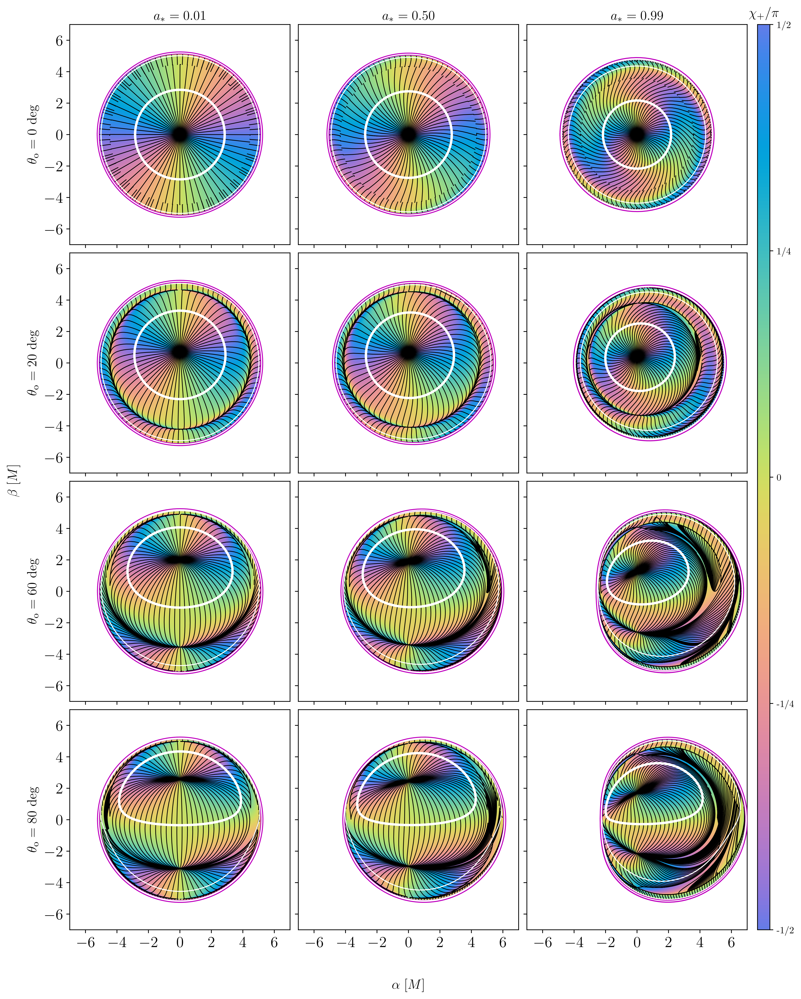
图注：The universal horizon formula (Equation~\eqref{eq:univevpa}) plotted inside the critical curve for black holes viewed at inclinations $\theta_o=0,20,60, 80\deg$ (rows) and spins $a_*=0.01,0.5,0.99$ (columns). In all panels, white contours indicate successive images of the black hole's equator $\theta_{\rm s}=\pi/2$, and integrated streamlines following the local EVPA are plotted in black.
对应解读：“建议重点查看的图表”第1项解析普适偏振图样图、第6项参数扫描图；“关键图表逐图导读”图2。
入选理由：这张图直接展示普适视界 EVPA 公式在不同观测倾角和黑洞自旋下的二维图样，是全文核心结论的最集中可视化证据。它同时给出 a-i 网格，可用于判断自旋和倾角如何改变图像平面上的偏振扭转，以及哪些区域对参数最敏感。
来源与置信度：\(arxiv_source\)；high；\(arxiv_source\) / \(draft_bhp3.tex\):figure[2]
Fig03
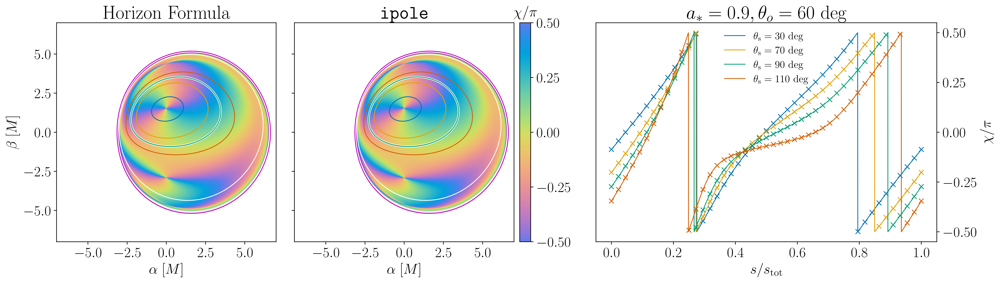
图注：Comparison of the universal horizon formula for the EVPA (Equation~\eqref{eq:univevpa}) with raytracing results from the \(\texttt{ipole}\) code for an $a_*=0.9$ black hole viewed at $\theta_{\rm o}=60\deg$. \(\emph{Left:}\) The cyclic colormap shows the universal EVPA formula (Equation~\eqref{eq:univevpa}) inside the critical curve. \(\emph{Center:}\) Numerical results from \(\texttt{ipole}\) obtained from confining emission to a thin shell surrounding the horizon in a monopole magnetosphere. \(\emph{Right:}\) The EVPA $\chi$ around the $n=0$ contours of constant horizon colatitude $\theta_{\rm s}=30,70,90,110\deg$ as a function of the fractional arc length $s$ counterclockwise around the curve from the $+\hat{\beta}$-axis. These contours are indicated on the left and center plots in the same color. The analytic horizon formula is plotted as the solid lines and EVPA values sampled from the \(\texttt{ipole}\) image are indicated with crosses.
对应解读：“建议重点查看的图表”第2项不同磁场几何或数值光追对比、第3项近视界收敛/残差趋势；“关键图表逐图导读”图3。
入选理由：这张图把解析普适 EVPA 公式与 ipole 数值光追结果逐点比较，并在不同视界余纬等值线上画出 EVPA 随弧长的曲线。它比单纯图像更能检验解析公式是否被独立辐射转移计算复现，是支撑‘普适公式不是形式推导错误’的关键验证图。
来源与置信度：\(arxiv_source\)；high；\(arxiv_source\) / \(draft_bhp3.tex\):figure[3]
Fig05
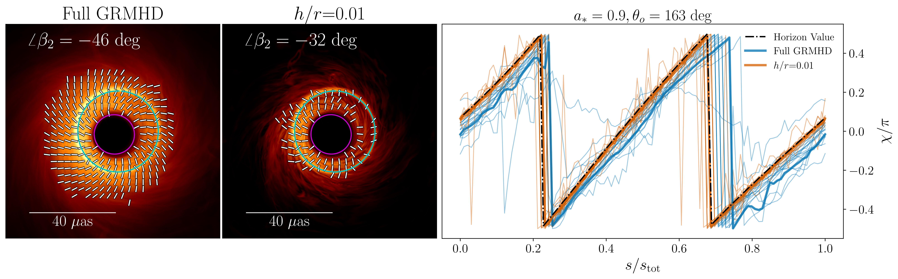
图注：The EVPA $\chi$ around the inner shadow taken from a MAD GRMHD simulation with spin $a_*=0.9$ and viewing angle $\theta_{\rm o}=163\deg$ and raytraced at 230 GHz with \(\texttt{ipole}.\) \(\emph{Left:}\) The averaged GRMHD image with mass-to-distance ratio scaled to that of M87*. The inner shadow is indicated by a magenta contour while the critical curve is shown in cyan. Tick marks indicate the local averaged EVPA across the image. \(\emph{Center:}\) The average image from raytraced snapshots where emission is restricted to lie very close to the equatorial plane, in a wedge with aspect ratio $h/r=0.01$. \(\emph{Right:}\) The EVPAs extracted from the GRMHD snapshots (thin blue lines) and time average (thick blue lines), the corresponding EVPAs from the simulation with restricted equatorial emission (orange). The EVPAs are plotted around the inner shadow contour as a function of normalized arc length $s$ measured counterclockwise from the $+\hat{\beta}$ axis. The predicted horizon value for equatorial emission (Equation~\eqref{eq:chiuniqueeq}) is indicated by the black dashed line.
对应解读：“建议重点查看的图表”第4项 GRMHD 时间平均偏振图、第5项残差或相关性诊断；“关键图表逐图导读”图4和图5；“模型拟合”中关于模拟图像与解析模板比较的段落。
入选理由：这张图展示 MAD GRMHD 模拟的时间平均偏振、限制赤道附近发射的对照图，以及沿内阴影轮廓提取的 EVPA 曲线，并叠加解析预测的视界值。它直接连接解析普适图样与复杂 GRMHD 图像，是判断湍流模拟是否趋向视界极限的最重要图之一。
来源与置信度：\(arxiv_source\)；high；\(arxiv_source\) / \(draft_bhp3.tex\):figure[5]
Fig06
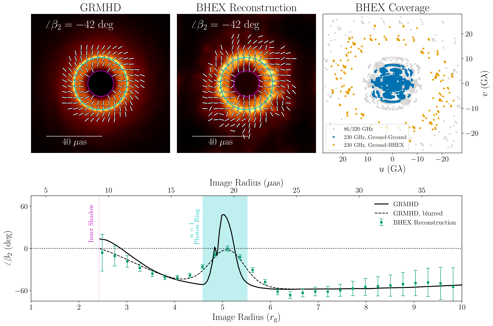
图注：Potential detectability of the trend toward the universal EVPA at the horizon in M87. \(\emph{Top Left:}\) A time-averaged 230 GHz image of a spin $a_*=0.9$ MAD GRMHD simulation of M87 viewed face-on ($\theta_{\rm o}=\pi$). \(\emph{Top Center:}\) An idealized image reconstruction of the GRMHD image using simulated data sampled on EHT+BHEX baselines. \(\emph{Top Right:}\) The $(u,v)$ coverage of the EHT+BHEX array used in the image reconstruction, with 230 GHz ground-ground baselines shown in blue and ground-space baselines shown in yellow. Array baselines at 86 and 320 GHz are indicated in grey. \(\emph{Bottom:}\) Values of $\angle\beta_2$ as a function of image impact parameter extracted from the top row GRMHD image (solid black line), values extracted from the same image blurred with a 3 $\mu$as FWHM Gaussian kernel representing half of the BHEX nominal beam at 230 GHz (dashed black line), and values extracted from the reconstructed image (green squares). The $2\sigma$ error bars on the reconstruction data points were derived assuming a uniform RMS noise level of $10^8$ K, or approximately 1\% of the peak total intensity.
对应解读：“建议重点查看的图表”第7项可观测性或合成 VLBI 图；“关键图表逐图导读”图6；“模型拟合”中关于阵列采样、卷积、噪声和可见度域比较的段落。
入选理由：这张图给出 M87* 类 GRMHD 图像、EHT+BHEX 合成重建、uv 覆盖以及 angle \(beta_2\) 随冲击参数的测量误差，直接回答普适视界偏振趋势在有限分辨率和噪声下是否可探测。它是从理论结果走向实际 VLBI 观测检验的关键图。
来源与置信度：\(arxiv_source\)；high；\(arxiv_source\) / \(draft_bhp3.tex\):figure[6]
Fig01
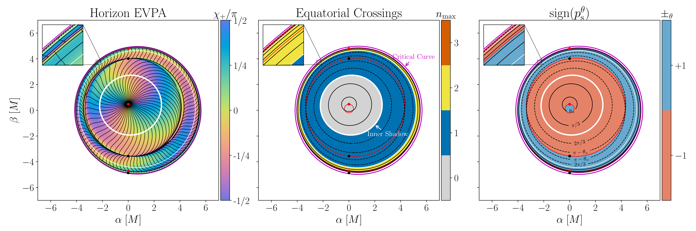
图注：The horizon EVPA, equatorial lensing structure, and sign of the outgoing polar momentum at the horizon for a Kerr black hole with spin $a_* = 0.9375$ viewed at inclination $\theta_{\rm o} = 20\deg$. \(\emph{Left:}\) The horizon EVPA $\chi_+$ plotted in a cyclic colormap; integrated streamlines following the EVPA are overplotted in black. \(\emph{Center:}\) The number of equatorial crossings $n$ made by null geodesics arriving at the observer screen. Contours of constant polar angle $\theta_{\rm s}$ on the horizon are shown in solid black lines for the northern hemisphere ($\theta_{\rm s}<\pi/2$) and dashed black lines for the southern hemisphere ($\theta_{\rm s}>\pi/2$). For $\theta_{\rm s}<\pi-\theta_{\rm o}$ these contours are closed circles; for $\theta_{\rm s}>\pi-\theta_{\rm o}$ they become banana-like shapes enclosing the image of the poles. \(\emph{Right:}\) The sign of the polar momentum of the outgoing null geodesic $\sign(p^\theta_{\rm s})$ at the horizon, which enters into the equation for the horizon EVPA (Equation~\eqref{eq:univevpa}). Red contours indicate boundaries where the sign of the outgoing polar momentum at the horizon switches when $\Theta(\theta_{\mathrm{s}})=0$. \(\emph{All panels:}\) The outer magenta contours indicate the critical curve, and white contours indicate successive images of the intersection of the event horizon with the equatorial plane. Successive images of the black hole's north and south poles are indicated by black and red dots. Insets in the top left show a zoomed-in view of the $n=1$ and $n=2$ photon ring structure.
对应解读：“关键图表逐图导读”图1；“建议重点查看的图表”第1项解析普适偏振图样及其图像平面坐标定义。
入选理由：这张图同时给出视界 EVPA 色图、赤道穿越次数、视界出射极向动量符号、临界曲线和视界赤道多重像，明确了解析公式中几何量在观测屏上的含义。它适合作为读者理解坐标、光线多重像和偏振图样来源的入口图。
来源与置信度：\(arxiv_source\)；high；\(arxiv_source\) / \(draft_bhp3.tex\):figure[1]
Fig04
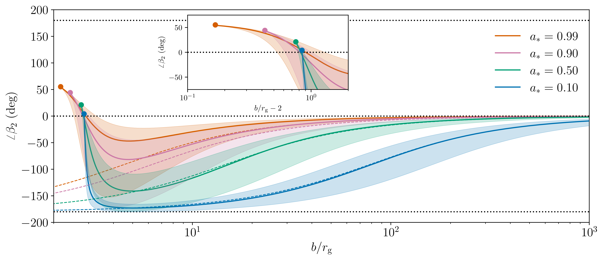
图注：The phase $\angle\beta_2$ as a function of observed impact parameter $b$ in an equatorial monopole model for several values of the black hole spin $a_*\in\{0.1,0.5,0.9,0.99\}$. For each spin, we vary the angular velocity $\OmegaF$ of the equatorial field line and set the poloidal current $I$ by the Znajek condition (Equation~\eqref{eq:znajek1}) at the horizon. The system is viewed face-on from the south pole ($\theta_{\rm o}=\pi$). The shaded regions represent the full range of $\angle\beta_2$ over the range $1/4\leq\OmegaF/\OmegaH\leq3/4$, while the solid lines show the models with $\OmegaF=\OmegaH/2$. Dashed lines indicate the observed $\angle\beta_2$ in a flat-space monopole with $\OmegaF=\OmegaH/2$. Solid dots at the left end of each curve show the unique horizon value of $\angle\beta_2$ (Equation~\eqref{eq:beta2faceon}) for face-on equatorial emission.
对应解读：“建议重点查看的图表”第3项近视界收敛图或径向趋势图、第6项参数扫描图；“模型拟合”中关于有限半径修正和参数退化的段落。
入选理由：这张图展示面向极向观测的赤道单极模型中 angle \(beta_2\) 随冲击参数、黑洞自旋和场线角速度范围的变化，并标出唯一视界值。它不是全文最直观的 EVPA 图样，但对理解有限半径如何向视界唯一值收敛、以及场线角速度变化造成的系统范围很有价值。
来源与置信度：\(arxiv_source\)；high；\(arxiv_source\) / \(draft_bhp3.tex\):figure[4]
强相关工作
这篇工作与 EHT 对 M87* 的偏振成像直接相关。EHT 已经展示事件视界尺度上存在有序线偏振，并用 GRMHD 模型讨论磁场强度、吸积状态和喷流功率。本文进一步把焦点从“哪些模拟能像数据”推进到“近视界偏振是否存在解析普适极限”。建议检索关键词包括：Event Horizon Telescope M87 polarization, black hole polarimetry, GRMHD polarized radiative transfer, near-horizon synchrotron polarization。
理论上，它连接 Blandford--Znajek 机制、Kerr 黑洞磁层和偏振平行移动。相近工作包括 force-free 或退化 Kerr 磁层中的能量抽取、黑洞阴影边缘的偏振结构、以及利用 Walker--Penrose 常数处理 Kerr 中偏振输运的研究。可能的张力来自更复杂的辐射转移模型：如果 Faraday 深度较大、发射主要来自盘体而非视界磁力线底部、或磁层强烈非定常非轴对称，那么观测图样未必接近本文的普适极限。建议检索关键词包括：Blandford Znajek process, Kerr force-free magnetosphere, Walker Penrose constant polarization, Faraday rotation EHT, MAD SANE polarization。
相似工作：
- https://arxiv.org/abs/2105.01173
- https://arxiv.org/abs/2105.01169
- https://arxiv.org/abs/2105.01170
基础理论 / 方法工作：
- https://ui.adsabs.harvard.edu/abs/1977MNRAS.179..433B/abstract
- https://ui.adsabs.harvard.edu/abs/1973ApJ...179..433B/abstract
- https://ui.adsabs.harvard.edu/abs/1968PhRv..174.1559C/abstract
相反观点 / 张力线索：
- https://arxiv.org/abs/1906.11241
- https://arxiv.org/abs/2006.06735
补充推荐：近期/较早未读论文（非今日论文）
1. Relativistic electron acceleration at the bow shock of Jupiter and beyond
- 来源：Nature astronomy and astrophysics
- 链接：https://www.nature.com/articles/s41586-026-10473-z
- 作者：未知
- 类型：补充推荐（近期/较早未读，非今日每日论文）
- 评分：novelty 8/10，importance 8/10，relevance 9/10，final 9.35/10
- 推荐理由：Nature research article on relativistic electron acceleration at Jupiter's bow shock; directly relevant to collisionless shocks, particle acceleration and cosmic-ray/high-energy astrophysics analogues.
中文题目：木星弓形激波及更远处的相对论电子加速
做了什么：这篇 Nature 论文讨论木星弓形激波能否把电子加速到相对论能量，并把这一近地可原位探测的行星激波作为检验宇宙激波粒子加速的实验室。核心问题不是“木星附近有没有高能电子”，而是这些电子是否可由弓形激波局地产生、其能谱和各向异性是否符合激波加速预期，以及这一过程能否外推到太阳风、恒星风、超新星遗迹和天体喷流中的无碰撞激波。由于用户提供的元数据没有摘要和图表细节，以下解读避免编造具体事件数和图号数值，重点说明论文应当如何建立证据链、哪些结果最值得核对。
为什么重要：相对论电子通常与超新星遗迹、脉冲星风、活动星系核喷流等极端环境联系在一起；如果木星弓形激波这样一个太阳系内的无碰撞激波也能高效产生或调制相对论电子，就等于给高能天体物理中的粒子加速理论提供了一个可原位测量的近场标定点。它能把遥远天体中只能由光谱和形态间接推断的激波加速过程，转化为磁场、等离子体、粒子分布函数和时变结构可以同时测量的问题。
理论 / 观测 / 仪器方法价值：对理论而言，本文的价值在于约束无碰撞激波中电子注入、散射、漂移加速和弥散激波加速的相对贡献；对观测而言，它提示行星磁层边界不仅是空间天气问题，也是高能粒子源和调制器；对方法而言，它要求把原位粒子谱、磁场几何、激波法向、上游/下游区分、背景辐射带电子污染和时间依赖输运放在同一个统计框架内。
为什么应该关注：如果你研究宇宙线、激波加速、磁层物理或高能辐射，这篇文章值得关注，因为它连接了两个常被分开处理的领域：太阳系原位等离子体物理和遥远天体的非热粒子加速。木星弓形激波的参数范围、空间尺度和观测可及性，使它成为检验“电子如何跨过注入门槛并进入幂律尾部”的少数天然实验场。
展开详细解读：文章讲解、背景、理论、重点章节、图表与相关工作
文章详细讲解
科学问题：本文关注的是木星弓形激波附近是否存在由激波过程产生的相对论电子，以及这些电子的能谱、方向性和空间分布是否能与普通磁层泄漏、太阳高能粒子事件或仪器背景区分开。弓形激波是超声速太阳风撞上木星磁层形成的无碰撞激波，离子尺度和电子尺度的微观过程决定了能量如何从流体运动转移到非热粒子。对电子而言，难点在于初始回旋半径小、与激波湍流耦合弱，必须先经历某种注入或预加速机制，才可能进入更通用的弥散激波加速循环。
作者怎么做：从题名看，论文很可能利用木星近旁航天器的原位粒子和场数据，比较激波穿越前后电子能谱、通量增强、投掷角分布、磁场压缩和等离子体流速变化。关键不是单点发现高能计数，而是把粒子增强与弓形激波几何、太阳风上游条件、磁场连接性和时间延迟联系起来。严谨的分析通常需要先确定激波位置和法向，再把观测划分为上游前兆区、激波过渡区、下游磁鞘区和可能的磁层泄漏区，并用背景模型扣除辐射带电子或探测器穿透粒子的贡献。
关键结果：论文题名中的“and beyond”暗示作者不仅报告木星弓形激波处的相对论电子加速，还讨论了这一机制对更广泛天体激波的外推意义。若证据链成立，最重要的结果应包括：相对论电子通量在接近或穿越弓形激波时系统性增强；增强的时间、方向和能谱形状与激波相关，而非简单随木星辐射带距离变化；能谱可用幂律或带截断的非热分布描述；推断的加速时间与太阳风对流时间、粒子散射均值自由程和能量损失时间相容。
局限和下一步：这类研究的主要局限是几何和因果性。单艘航天器穿越只能给出时间序列，必须通过激波模型和太阳风传播把时间变化解释为空间结构；木星磁层很大，辐射带和磁尾可向外泄漏高能电子，容易与局地激波加速混淆；相对论电子计数也可能受穿透背景、死时间、能道串扰和角响应影响。下一步应是多航天器联合、不同太阳风条件下的事件统计、粒子轨道反演、与全动理学或混合模拟对比，并检验同样机制在土星、地球、日球层终止激波以及恒星风弓形激波中的可迁移性。
关键结果是怎么做出来的
数据和样本选择方面，读者首先应检查作者如何定义“木星弓形激波事件”。可信的样本不应只依据电子通量峰值来选，而应由磁场压缩、等离子体速度下降、密度和温度跃迁、激波法向模型以及航天器轨道位置共同确定。由于给定元数据没有摘要和表格，不能在这里声称具体穿越次数；阅读原文时应优先查看事件表，确认每个事件的时间、航天器位置、上游太阳风条件、激波马赫数、激波角 \(\theta_{Bn}\) 和可用粒子能道。
证据链的核心应是“相对论电子增强是否与激波因果相关”。作者需要比较激波前后多个能道的计数率和微分通量，给出背景区间、信号区间和误差估计。若使用泊松统计，显著性应来自信号计数相对于背景期望的偏离；若使用似然模型，则应比较含激波加速分量与仅含背景/磁层泄漏分量的模型。读者应警惕只展示漂亮的个例时间序列而缺少事件总体统计，因为木星磁层环境本身高度非平稳。
模型比较方面，最有说服力的做法是同时拟合能谱和空间/时间剖面。例如非热幂律或带指数截断的谱可以说明粒子经历了加速，而角分布或各向异性可以判断粒子是沿磁力线从磁层泄漏，还是在准平行/准垂直激波附近被局地加速。若论文给出 \(\Delta \ln \mathcal{L}\)、贝叶斯因子、信息准则或蒙特卡洛置乱检验，读者应查看这些统计量是否在不同事件、不同能道和不同背景定义下保持稳定。
支撑结论的图表通常应包括：航天器轨道与模型弓形激波位置图；激波穿越时间序列图；电子能谱及拟合残差；事件堆叠或统计图；激波参数与相对论电子增强幅度的相关图；系统误差或替代背景模型对比表。尤其要看高能端是否由少数计数点支配，误差条是否为泊松置信区间而非简单高斯误差，能谱硬化是否超出仪器能量响应不确定性。
系统误差方面，最关键的是磁层泄漏电子、太阳高能粒子事件、仪器穿透背景和激波位置模型误差。稳健性检验应包括改变背景窗口、剔除靠近辐射带或磁尾的事件、分别分析不同投掷角扇区、用不同弓形激波模型重算距离、用独立粒子仪器或不同能道交叉验证。如果结论只在少数特定窗口成立，而在替代选择下消失，则“激波加速”解释需要降级为候选解释。
背景知识
木星弓形激波是太阳系中最强、最大尺度的行星弓形激波之一。太阳风以超磁声速撞击木星巨大磁层时，必须通过激波把有序流动能转化为热能、磁场压缩和非热粒子能量。与地球弓形激波相比，木星磁层尺度更大、旋转驱动更强、内部等离子体源更复杂，尤其是来自木卫一的等离子体会改变磁层边界环境。
历史上，行星弓形激波一直是无碰撞激波物理的天然实验室。无碰撞意味着粒子间库仑碰撞不足以完成热化，能量转换依赖电磁场、波粒相互作用、微湍流和集体不稳定性。离子加热、反射和湍流放大在空间物理中研究较多；电子加速到相对论能量则更困难，因为电子需要跨越注入门槛，才能在大尺度磁湍流中像宇宙线一样多次穿越激波。
木星周围的观测背景又特别复杂。木星辐射带本身能产生大量高能电子，磁层压缩、磁尾重联和径向扩散都可能把电子带到外磁层甚至弓形激波附近。因此，看到高能电子并不自动等于激波加速。本文重要之处正在于它若能把高能电子增强与激波几何和能谱演化对应起来，就能从复杂背景中分离出局地加速信号。
现在重新看这个问题有几个原因。第一，现代航天器粒子和场仪器的能量覆盖、角分辨率和时间分辨率更好；第二，全球磁流体模型、激波定位模型和动理学模拟能更准确地给出磁场连接性；第三，高能天体物理对电子注入问题仍缺少直接约束，太阳系内观测可以检验遥远天体解释中常用的假设。
常见误区包括：把所有幂律谱都解释为弥散激波加速；忽略木星磁层泄漏导致的假阳性；把单次时间序列当作空间剖面而不讨论激波运动；用非相对论公式解释相对论电子；或者只关注粒子通量增强而不检查投掷角分布、磁场连接和背景事件。专业读者应把本文当作“因果识别”问题，而不仅是“发现高能粒子”的观测报道。
基础理论 / 方法脉络
基本物理图像是：太阳风携带磁场和等离子体，以超磁声速流向木星磁层。当流速超过信息传播速度时，上游流体不能平滑绕流，必须通过弓形激波实现速度下降、密度上升、磁场压缩和熵增。在无碰撞情形下，激波厚度只有若干离子惯性长度或回旋半径量级，粒子的能量变化由电磁场和波粒相互作用控制。
电子加速可有多条路径。准垂直激波中，电子可通过激波漂移加速从运动电场获得能量；准平行激波中，反射粒子和上游湍流可形成前兆区，使粒子多次散射穿越激波，进入弥散激波加速。两者并非互斥：漂移加速或波粒相互作用可提供注入，随后弥散过程形成较宽的非热尾部。本文若讨论相对论电子，必须说明电子如何从热或超热能量跨越到 \(\gamma \gtrsim 1\) 的能区。
关键量包括激波法向与上游磁场夹角 \(\theta_{Bn}\)、上游阿尔芬马赫数 \(M_A\)、压缩比 \(r\)、粒子能量 \(E\)、微分强度 \(j(E)\)、投掷角 \(\alpha\)、散射均值自由程 \(\lambda\)、扩散系数 \(\kappa\) 和加速时间 \(t_{\rm acc}\)。观测上需要把粒子通量与磁场和等离子体跃迁同步分析，因为单独的通量峰不能区分局地加速、磁场连接改变或仪器背景。
仪器和数据分析逻辑也很重要。粒子探测器测到的是有限能道、有限视场和有限几何因子的计数率，必须转换成微分通量或相空间密度。高能电子尤其容易受到穿透粒子、反符合效率、死时间和能道响应函数影响。若论文声称“相对论”，读者要检查能量标定、背景扣除和响应矩阵是否足以支撑高能端的谱形。
主要退化关系包括：激波局地加速与磁层泄漏的退化；空间结构与时间变化的退化；幂律谱与多个热/非热源叠加的退化；加速效率与背景归一化的退化；激波角 \(\theta_{Bn}\) 与磁场模型误差的退化。好的论文应通过事件统计、方向分布、能谱演化和模型比较尽量打破这些退化。
公式与推导
第一步从无碰撞激波的流体跃迁出发。沿激波法向的质量守恒可写为
其中 \(\rho_1\) 和 \(\rho_2\) 是上游、下游质量密度，\(u_{1n}\) 和 \(u_{2n}\) 是相对于激波面的法向流速。压缩比定义为
在强激波和理想气体近似下，\(r\) 决定了弥散激波加速产生的谱斜率，但在真实木星弓形激波中还会受磁场、马赫数和激波角影响。
第二步引入激波几何。上游磁场 \(\mathbf{B}_1\) 与激波法向 \(\mathbf{n}\) 的夹角是
当 \(\theta_{Bn}\) 接近 \(90^\circ\) 时，激波漂移加速通常更有效；当 \(\theta_{Bn}\) 较小时，上游回流和弥散过程更容易发展。这个量也是模型误差最敏感的诊断之一，因为 \(\mathbf{n}\) 往往来自弓形激波面模型或多点时延估计。
第三步描述粒子在运动电场中的能量变化。太阳风参考系到激波参考系的电场近似为
粒子能量变化率为
其中 \(q\) 是粒子电荷，\(\mathbf{v}\) 是粒子速度。对电子而言，漂移速度若在运动电场方向上有分量，就可以在一次或少数几次激波相互作用中获得预加速能量。
第四步给出弥散激波加速的典型能谱。在稳态、平面、各向同性散射近似下，动量分布满足
其中 \(p\) 是粒子动量，\(f(p)\) 是相空间分布函数。相对论能区若 \(E\approx pc\)，微分能谱可近似写为
这里 \(N(E)\) 是单位能量粒子数密度。若观测到的电子谱斜率与由 \(r\) 推断的 \(s\) 大致一致，会支持激波加速解释；若差异很大，则需要考虑逃逸、损失或外来源。
第五步估计加速时间。扩散近似下，一阶费米加速时间为
其中 \(u_1\) 和 \(u_2\) 是激波参考系上游和下游流速，\(\kappa_1\) 和 \(\kappa_2\) 是两侧沿法向的扩散系数。若采用 \(\kappa\approx v\lambda/3\)，则高能电子能否在观测到的停留时间内达到相对论能量，直接取决于散射均值自由程 \(\lambda\) 是否足够小。
第六步把粒子数转换成仪器可观测量。有限能道 \([E_a,E_b]\) 内的期望计数可写为
其中 \(T\) 是积累时间，\(j(E,\Omega)\) 是方向相关微分通量，\(G_i\) 是几何因子，\(R_i\) 是能量响应，\(b_i\) 是背景计数。这个式子提醒读者，高能通量不是直接观测量，而是经响应反演得到的。
第七步给出显著性或模型比较的统计基础。若计数服从泊松分布，似然为
其中 \(n_i\) 是第 \(i\) 个时间或能量 bin 的观测计数。含激波加速分量的模型 \(\mathcal{M}_1\) 与仅背景模型 \(\mathcal{M}_0\) 可用
比较。若正则条件近似成立，\(TS\) 可转化为近似显著性；若计数低或参数在边界上，应使用蒙特卡洛校准。
第八步考虑能量上限。若加速与逃逸竞争，最大能量可由
估计，其中 \(t_{\rm esc}\) 是逃逸时间，\(t_{\rm loss}\) 是能量损失时间，\(t_{\rm age}\) 是激波结构持续时间。对木星弓形激波，相对论电子能否局地产生的关键检查就是由观测推得的 \(E_{\max}\) 是否能在这些时间尺度内达到。
模型拟合 / 应用方法
这类论文的拟合量通常包括电子能谱参数、背景归一化、激波相关增强幅度、谱指数、截断能量、各向异性参数以及与激波距离或 \(\theta_{Bn}\) 的相关系数。若作者使用单事件拟合，应重点看能谱是否跨越足够多能道；若使用事件总体拟合，应检查是否采用分层模型，把事件间差异作为随机效应而不是简单合并。
似然函数最好建立在计数空间，而不是只对反演后的通量做高斯拟合。原因是高能端计数低，泊松不对称误差明显；不同能道之间还可能因响应矩阵产生协方差。严谨做法是从模型通量出发，经几何因子、能量响应和背景模型预测计数，再与观测计数比较。若论文只给出通量图，读者应查看附录是否说明计数误差和响应矩阵处理。
参数退化是解释的核心难点。背景归一化升高可以模拟低显著性的高能尾；谱指数变硬可以模拟截断能量升高；磁层泄漏源强与局地加速效率可能在单点时间序列中高度退化；激波位置误差会影响“距离激波越近通量越高”的相关性。合适的拟合应通过多能道、多方向、多事件和独立磁场/等离子体约束来减少退化。
残差诊断比最佳拟合参数更重要。若激波加速模型正确，残差不应只在激波穿越时刻附近系统偏正，也不应只出现在最高能一个能道；能谱残差不应显示出明显的仪器响应边界特征；不同投掷角扇区的残差应与磁场连接预期一致。读者应特别检查作者是否展示了背景区间、信号区间和替代模型的残差，而不是只给最终谱线。
模型可能失败的场景包括：电子增强与磁场连接到木星内磁层同步，而非与激波参数同步；高能端由少数异常计数或太阳高能粒子事件驱动；不同事件的谱指数和增强幅度没有共同规律；用替代弓形激波模型后相关性显著下降；或动理学时间尺度显示局地加速来不及达到观测能量。这些失败并不一定否定观测事实，但会削弱“弓形激波产生相对论电子”的物理解释。
重点章节 / 结果段落怎么读
数据/样本部分应首先阅读。重点看作者使用了哪艘或哪些航天器、哪些粒子能道和磁场/等离子体仪器，事件是如何选出的，是否列出每次弓形激波穿越的时间、位置、上游条件和数据质量标记。没有清楚样本定义的高能粒子论文很容易受选择偏差影响。
激波识别和几何重建部分是第二个重点。读者应看激波法向、\(\theta_{Bn}\)、马赫数和压缩比如何获得：是来自磁场最小方差分析、Rankine-Hugoniot 条件、多点时延，还是经验弓形激波模型。不同方法的误差会直接传递到加速机制判断。
粒子谱和各向异性分析部分是本文的核心。应检查作者是否把相对论电子通量增强与低能电子、离子、磁场压缩和波动功率同时展示；是否给出能谱拟合和残差；是否区分准平行与准垂直激波；是否说明高能电子的方向性支持局地加速还是磁层泄漏。
统计检验和稳健性部分决定结论强度。优先看作者如何计算显著性、如何处理低计数泊松误差、如何定义背景窗口、是否剔除太阳高能粒子事件、是否用替代激波模型或不同能道重复分析。若这些内容在附录中，附录反而比主文叙述更重要。
讨论部分应关注作者如何从木星外推到“beyond”。合理外推应比较无量纲参数，例如马赫数、\(\theta_{Bn}\)、等离子体 \(\beta\)、压缩比、湍流水平和粒子回旋半径与系统尺度之比，而不是简单说“木星证明所有激波都能加速相对论电子”。
建议重点查看的图表
-
航天器轨道与木星弓形激波位置图：看轨道点、模型激波面、磁层顶和事件标记是否清楚；事件是否集中在某些轨道相位，可能导致选择偏差。
-
典型激波穿越时间序列：看磁场强度、等离子体速度/密度、电子不同能道计数率是否同步变化；高能增强是否滞后或提前于激波跃迁。
-
电子能谱图：看横轴能量、纵轴微分通量或相空间密度；幂律/截断模型是否覆盖高能端；误差条是否在高能处明显不对称。
-
投掷角分布或各向异性图：看高能电子是否沿磁场方向增强，是否符合从上游回流、下游压缩或磁层泄漏来的几何预期。
-
事件统计或堆叠图：看多个事件是否共同支持相同趋势，而不是由一两个强事件主导；应关注中位数、置信区间和离群点。
-
激波参数相关图：看电子增强幅度或谱指数是否与 \(\theta_{Bn}\)、马赫数、压缩比、距激波距离相关；相关性是否给出置信区间和置乱检验。
-
背景和系统误差表：看不同背景窗口、不同激波模型、不同能道选择、剔除可疑事件后，主要结论是否稳定。
关键图表逐图导读
图 1：通常应是木星空间环境和观测几何图。横纵坐标可能是木星中心坐标系中的距离，单位为木星半径；曲线表示模型弓形激波和磁层顶，点或轨迹表示航天器位置。读图时要看事件点是否真的位于弓形激波附近，而不是靠近磁层顶或磁尾边界；还要注意投影图可能掩盖三维距离。
图 2：典型事件时间序列应把磁场、等离子体和电子计数率放在同一时间轴上。模型线或阴影区可能标出上游、激波过渡和下游。关键是高能电子增强是否与独立定义的激波穿越一致，而不是作者用电子增强反过来定义激波。读图陷阱是不同面板纵轴可能采用对数尺度，使小的背景变化看起来很显著。
图 3：能谱拟合图应以能量为横轴、微分通量或相空间密度为纵轴，展示背景谱、激波期谱和非热模型。若有幂律线或截断线，应看高能端有几个独立能道支撑；如果只有一个最高能点偏高，谱硬化结论不稳。残差面板尤其关键，可判断模型是否系统性低估某一能段。
图 4：投掷角或方向分布图应显示粒子相对于局地磁场的角分布。若局地激波加速成立，某些几何下会出现上游回流束、损失锥样结构或下游更各向同性的分布。若方向性更像从木星内磁层沿磁力线泄漏，则需要重新评估激波解释。注意仪器视场覆盖不完整会造成假各向异性。
图 5：事件总体统计图可能展示增强因子随 \(\theta_{Bn}\)、马赫数或距激波距离的变化。读者应看散点数量、误差条、相关系数和置信带；若相关性由少数极端事件驱动，应要求稳健回归或留一法检验。若论文给出置乱检验，优先看置乱后的假阳性率。
图 6：系统误差或模型比较图/表应展示不同背景选择、不同响应矩阵、不同激波模型下的结果变化。主结论若只在一种处理流程下成立，就应视为脆弱；若谱指数、增强因子和显著性在多种流程下相近，则“木星弓形激波加速相对论电子”的说服力明显增强。
论文原图 / 可嵌入图片
Fig02
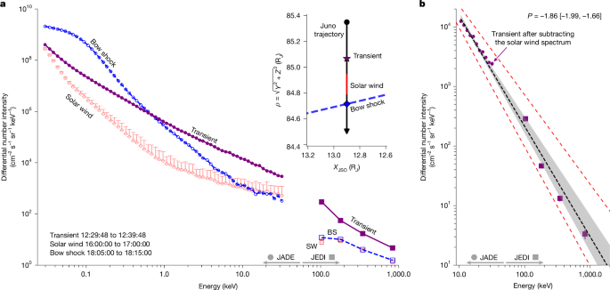
图注：Fig. 2: Spectral evidence of efficient electron acceleration within the foreshock transient.
对应解读：对应“建议重点查看的图表”第3项电子能谱图，以及“关键图表逐图导读”图3和“模型拟合”中关于能谱参数、幂律/截断、高能端误差与残差诊断的讨论。
入选理由：标题明确为“foreshock transient 内高效电子加速的谱证据”，最直接支撑论文核心结论：木星弓形激波附近是否把电子加速到相对论能量。相比其他候选图，它最可能包含能量—通量谱、非热谱形状、高能端支撑点和模型拟合信息，是判断加速是否真实而非背景或单一能道异常的关键图。
来源与置信度：\(html_figure\)；medium；\(html_figure\) / https://www.nature.com/articles/s41586-026-10473-z#figure[2]
Fig01
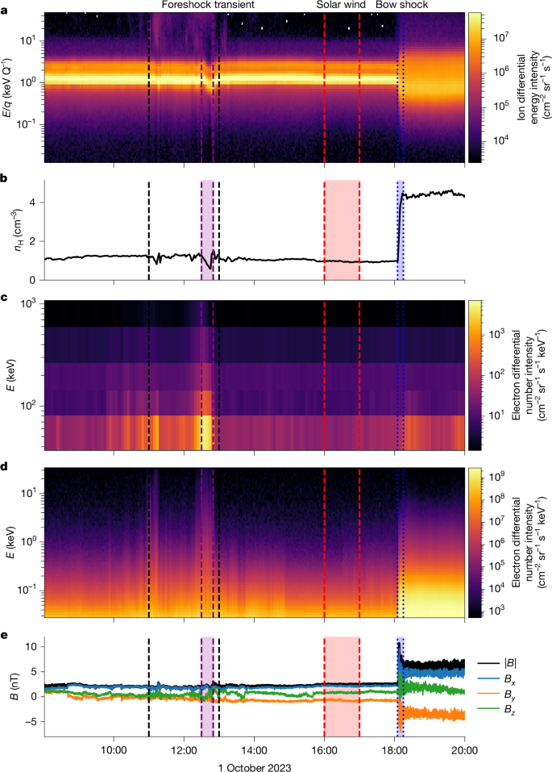
图注：Fig. 1: In situ observations of the foreshock transient and bow shock crossing at Jupiter.
对应解读：对应“建议重点查看的图表”第1项航天器轨道与弓形激波位置、第2项典型激波穿越时间序列，以及“关键图表逐图导读”图1和图2关于弓形激波穿越、上游/下游划分和电子增强时序的讨论。
入选理由：图注说明它展示木星前震瞬变和弓形激波穿越的原位观测，是建立因果链的基础：电子增强必须与独立的磁场、等离子体和激波穿越诊断相一致。它比单纯的外推或示意图更能检验事件是否确实发生在弓形激波/前震区，而不是磁层泄漏或背景变化。
来源与置信度：\(html_figure\)；medium；\(html_figure\) / https://www.nature.com/articles/s41586-026-10473-z#figure[1]
Fig03
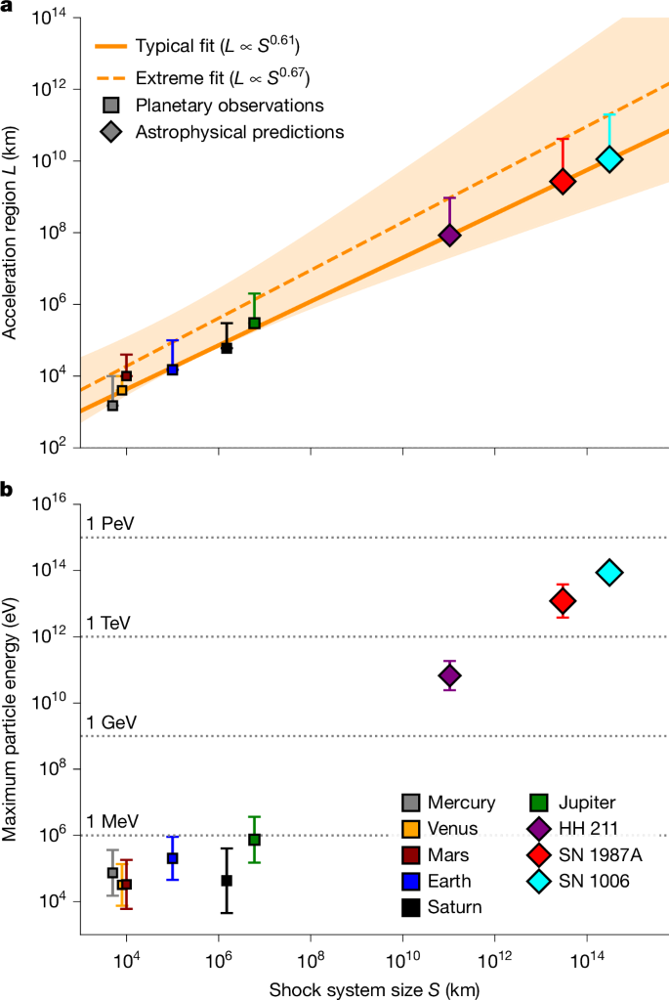
图注：Fig. 3: Scaling analysis and maximum particle energy for planetary and astrophysical shocks.
对应解读：对应日报详细解读中“and beyond”的外推意义，以及“关键结果”里关于该机制向行星和天体物理激波推广、最大粒子能量和加速时间尺度的讨论。
入选理由：该图关注行星与天体物理激波的标度分析和最大粒子能量，适合支撑论文从木星个例推广到更广泛无碰撞激波的论点。它对核心观测证据的直接性弱于Fig01和Fig02，但对理解题名中“and beyond”和物理外推价值很重要。
来源与置信度：\(html_figure\)；medium；\(html_figure\) / https://www.nature.com/articles/s41586-026-10473-z#figure[3]
强相关工作
这篇工作与地球弓形激波、土星弓形激波、日球层终止激波和超新星遗迹激波的粒子加速研究直接相关。可检索关键词包括“Jupiter bow shock relativistic electrons”、“collisionless shock electron acceleration”、“shock drift acceleration electrons”、“diffusive shock acceleration injection problem”、“Jovian magnetosphere energetic electron leakage”。重点比较对象是那些同时拥有原位场粒子观测和清楚激波几何重建的研究。
理论上，它与弥散激波加速的一阶费米理论、准垂直激波漂移加速、电子注入问题和波粒相互作用研究相连。潜在张力来自两类观点：一类认为行星弓形激波可以提供有效电子预加速，是天体激波电子注入的近场类比；另一类认为木星高能电子主要来自强辐射带和磁层输运，弓形激波处的增强可能只是连接性或边界运动造成的表观效应。读者应用“源区识别”和“时间尺度闭合”来判断本文站在哪一边。
相似工作：
- https://www.nature.com/articles/s41586-026-10473-z
- https://ui.adsabs.harvard.edu/search/q=%22Jupiter%20bow%20shock%22%20%22energetic%20electrons%22
- https://ui.adsabs.harvard.edu/search/q=%22bow%20shock%22%20%22electron%20acceleration%22%20%22Jupiter%22
基础理论 / 方法工作：
- https://ui.adsabs.harvard.edu/search/q=%22diffusive%20shock%20acceleration%22%20Blandford%20Ostriker
- https://ui.adsabs.harvard.edu/search/q=%22shock%20drift%20acceleration%22%20electrons
- https://ui.adsabs.harvard.edu/search/q=%22collisionless%20shocks%22%20%22electron%20injection%22
相反观点 / 张力线索：
- https://ui.adsabs.harvard.edu/search/q=%22Jovian%20magnetosphere%22%20%22energetic%20electron%22%20leakage
- https://ui.adsabs.harvard.edu/search/q=%22Jupiter%22%20%22radiation%20belts%22%20%22energetic%20electrons%22
- https://ui.adsabs.harvard.edu/search/q=%22solar%20energetic%20particles%22%20%22Jupiter%20bow%20shock%22
说明
评分由 LLM 给出初评，再由本地阈值策略过滤；IACT、TeV 伽马射线和高能中微子天文学按重点方向处理。